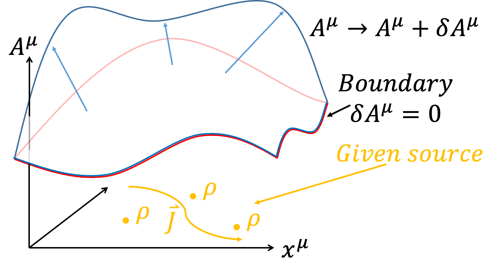

- 前言
- 初階變分法
- 簡化變分表示法
- Lagrangian的不唯一性
- 動量空間的Lagrangian
- 古典諾特定理
- Maximal Symmetry Action
- 淺談Particle與EM Field交互作用下的Action
- Free Particle Action的變分
- Charge Particle與EM Field作用下的變分與運動方程
- 4-Volume \(d^4 x\)與Lagrangian Density \(\mathcal{L}\)
- Maxwell's equations
- 電磁學中的規範不變性Gauge Invariance
- 規範不變與Action的變分
- 淺談Gauge Invariance和Continuity equation
- Impossibility of \(A_\mu A^\mu\) if keeping gauge invariance
- 淺談量子場論中的\(A_\mu A^\mu\) -光子質量
- 連續場與波動方程
- 古典場論
- 場論中的Lagrangian density不唯一性
- 不破壞EoM的其他可能
- 場論中的諾特定理Noether theorem-Field theory
- 諾特定理與對稱性-時空與能量動量守恆
- Infinitesimal Poincare Transformation
- Maximal Symmetry Action-Field theory
- EM field energy-momentum tensor and “standard” symmetrization procedure
- 討論利用Lagrangian不唯一性引入對稱的EM張量
- 場正則轉換方程式
- Hamiltonian變分
- 廣義相對論
現代的物理學發展的框架下，喜歡從作用量Action S出發，當物理學家寫下Action後（根據實驗、物理現象和限制等等猜出），針對Action做變分\(\delta S\)（Variation）後，在最小作用量原理（Principle of least action）\(\delta S=0\)的要求下，就可以得到物理遵守的運動方程，後續就根據不同的物理系統求滿足運動方程的物理量變化。 古典力學的發展上，由d' Alembert利用虛功原理可以得到 $${d \over dt}{\partial L \over \partial \dot{x}_i}-{\partial L \over \partial x_i}=0$$ 後來Hamilton進一步闡明上述方程是滿足 $$\int_a^b L(x_1,...,x_n,\dot{x_1},...,\dot{x_n},t)dt$$ 利用變分法取極值\(\delta S=0\)的必然結果。 在物理學上，變分法通常用於新理論在初期發展時，由於物理學家還不知道正確的運動方程，故會根據實驗成果、物理經驗等去猜Action可能的形式，然後利用變分法得到描述Lagrangian滿足的運動方程，此後變分法便功成身退，後續的解題過程只要處理運動方程即可。例如 $$\int_a^b L(x,\dot{x},t)dt$$ 用變分後可以得到Euler-Lagrange equation $${d \over dt}{\partial L \over \partial \dot{x}}-{\partial L \over \partial x}=0$$ 後續理論力學課程只要會解Euler-Lagrange equation就好，所以整學年的課程變分法不常出現，於是應數相關的書籍對於變分法提及就不多。故在此簡單用不是數學上嚴謹的方式稍為介紹一下變分法。
如果今天，一個泛函（Functional）的積分問題
$$S[F(x,\dot{x},t)]=\int_a^b F(x,\dot{x},t)dt$$
其中，\(x=x(t)\)、\( \dot{x}=dx \over dt\)，固定\(a\)、\(b\)下改變軌跡\(x(t)\)的形式會對積分S造成影響，我們想找到S的極值（Extreme value，不論極大或極小）下，軌跡\(x(t)\)會是什麼形式？或是\(F(x,\dot{x},t)\)該滿足什麼條件？根據微積分的概念，在\(f(x)\)極值\(x_0\)附近做微小的變化\(x_0 + \varepsilon\)時，\(f(x)\)是不會有變化的，即\(df=0\)。類似的想法，\(S\)在極值附近時，\(x(t)\)稍微改變形式，\(\delta S=0\)。我們可以將積分問題簡單的用圖像表達，不同\(x(t)\)的函數形式表示不同的路徑連結\(a\)到\(b\)點。
 |  |
前一部分介紹了簡單的變分法概念，但是需要引入任意的函數\(\eta (t)\)，手法上稍嫌煩瑣，不利於後續操作。第二部分以相同的概念，採用比較抽象的想法但相同的數學手法，演示一次變分法的操作。有點像將變分的操作類同於微分操作。
 | |
|
進階：Thm.1 :微分與變分對調 如果今天微分與變分針對的對象不同，如對t微分 \(d \over dt\)、對x變分\(\delta x\)，則 \(d \over dt\)與\(\delta \)可以對調。 $$\delta \dot{f}=\dot{f} (x+\delta x)-\dot{f}(x)$$ $$= {d \over dt} \left(f(x+\delta x)-f(x)\right)= {d \over dt} \delta f$$ |
$$\delta S=\int _a^b {\partial F\over\partial x} \delta xdt+ \int _a^b {\partial F\over \partial \dot{x} } \left( {d \over dt} \delta x\right)dt $$ 同樣的手法對第二項做分部積分 $$\int _a^b {\partial F\over \partial \dot{x} } \left( {d \over dt} \delta x\right)dt = \color{red}{{\partial F\over \partial \dot{x} } \delta x \Big|_a^b}-\int _a^b {d \over dt} {\partial F\over \partial \dot{x} } \delta xdt$$ 注意紅色這一項，因為我們要求變分\(\delta x\)滿足\(\delta x(a)=\delta x(b)=0\)，所以\( \color{red}{{\partial F\over \partial \dot{x} } \delta x\Big|_a^b=0}\) $$\delta S=\int _a^b {\partial F\over\partial x} \delta xdt-\int _a^b \left( {d \over dt} {\partial F\over \partial \dot{x} } \right)\delta xdt $$ $$=\int _a^b \left( {\partial F\over\partial x}- {d \over dt} {\partial F\over \partial \dot{x} } \right)\delta xdt=0$$ \(\delta x \) is arbitrary. $$ {\partial F\over\partial x}- {d \over dt} {\partial F\over \partial \dot{x} } =0$$ Euler-Lagrange equation
| 進階：Thm.2:變分的Chain rule $$\delta (FG)={\partial (FG)\over\partial x} \delta x+{\partial (FG)\over \partial \dot{x} } \delta \dot{x}$$ $$=\left( {\partial F\over\partial x} G+F {\partial G\over\partial x}\right)\delta x+\left( {\partial F\over \partial \dot{x} } G+F {\partial G\over\partial \dot{x}} \right)\delta \dot{x}$$ $$=\left( {\partial F\over\partial x} \delta x+ {\partial F\over \partial \dot{x} } \delta \dot{x} \right)G+F\left({\partial G\over\partial x} \delta x+{\partial G\over\partial \dot{x}} \delta \dot{x} \right)$$ $$= \delta F\cdot G+F\cdot \delta G$$ |
| 進階：Thm.3:針對函數F同乘同除另一函數G，不影響變分 $$\delta F=\delta \left(F\cdot {G\over G}\right)=\delta \left(F\cdot G\cdot G^{-1} \right)$$ $$=\delta F\cdot G\cdot G^{-1}+F\cdot \delta G\cdot G^{-1}+F\cdot G\cdot \delta (G^{-1} )$$ $$=\delta F+F\cdot \delta G\cdot G^{-1}+F\cdot G\cdot \left(-{\delta G\over G^2} \right)$$ $$=\delta F$$ |
理論力學的課程中，都有學過當\(Lagrangian\)添加一個函數\(f=f(q,t)\)時間的全微分項\({df\over dt}\)，\(L→L+{df\over dt}\)並不會改變EoM。這可以從兩個部分來看。第一種是最簡單的從變分的端點，
$$\delta S=\delta \int _a^b (L+{df\over dt})dt$$
$$=\delta \left[\int _a^b Ldt+\int _a^b {df\over dt} dt \right]$$
$$=\delta \left[\int _a^b Ldt+f(b)-f(a)\right]$$
$$=\delta \int _a^b Ldt+\delta f(b)-\delta f(a)$$
但因為端點不做變分，所以\(\delta f(b)=\delta f(a)=0\)，自然的
$$\delta \int _a^b \left(L+{df\over dt}\right)dt=\delta \int _a^b Ldt=0$$
另外一種是直接展開，觀察\(L+\dot{f}\) 是否滿足
\({d\over dt} {\partial \over\partial \dot{x}}\left( L+\dot{f} \right) -{\partial \over\partial x}\left( L+\dot{f} \right)=0\)
$${d\over dt} {\partial \over\partial \dot{x}}\left( L+\dot{f} \right) -{\partial \over\partial x}\left( L+\dot{f} \right)={d\over dt} {\partial L\over\partial \dot{x}} -{\partial L\over\partial x}+\color{red}{{d\over dt} {\partial \dot{f} \over\partial \dot{x}} -{\partial \dot{f} \over\partial x}}$$
紅色項我們可以觀察兩件事，因為\(f=f(x,t)\)
$$df={\partial f\over\partial x} dx+{\partial f\over\partial \dot{x}} d\dot{x} +{\partial f\over\partial t} dt$$
$$\to \dot{f} ={\partial \over\partial x} \dot{x} +{\partial f\over\partial \dot{x}} \ddot{x} +{\partial f\over\partial t}$$
所以
$${ \partial \dot{f} \over\partial \dot{x}} ={\partial f\over\partial x}\to dot\ cancellation$$
$${\partial \over\partial x} \dot{f}={\partial \over\partial x} \left({\partial \over\partial x} \dot{x} +{\partial f\over\partial \dot{x}} \ddot{x} +{\partial f\over\partial t}\right)$$
$$=\left({\partial \over\partial x} {\partial f\over\partial x}\right) \dot{x} +\left({\partial \over\partial x} {\partial f\over\partial \dot{x}} \right) \ddot{x} +\left({\partial \over\partial x} {\partial f\over\partial t}\right)$$
$$={d\over dt} \left({\partial f\over\partial x}\right)\to{d\over dt},{\partial \over\partial x} commute $$
會得到紅色項為零
$$\color{red}{{d\over dt} {\partial \dot{f} \over\partial \dot{x} }-{\partial \dot{f} \over\partial x}={d\over dt} {\partial f\over\partial x}-{d\over dt} {\partial f\over\partial x}=0}$$
故
$${d\over dt} {\partial \over\partial \dot{x}}\left( L+\dot{f} \right) -{\partial \over\partial x}\left( L+\dot{f} \right)={d\over dt} {\partial L\over\partial \dot{x}} -{\partial L\over\partial x}=0$$
添加\(\dot{f}\) 不會改變EoM。
Lagrangian equation不只可以在\((q,\dot{q} ,t)\)中描述，也可以在動量空間\((p,\dot{p} ,t)\)中描述，轉換如下： $$ p={\partial L \over \partial \dot{q}} $$ $$\dot{p} ={d\over dt} {\partial L\over\partial \dot{q}}={\partial L\over\partial q}$$ \(p\)為廣義動量。利用\(L=L(q,\dot{q} ,t)\)， $$dL=\dot{p} dq+pd\dot{q} +{\partial L\over\partial t} dt$$ $$=d(\dot{p} q)-qd\dot{p} +d(p\dot{q} )-\dot{q} dp+{\partial L\over\partial t} dt$$ $$=\color{red}{d(\dot{p} q+p\dot{q} )}-qd\dot{p} -\dot{q} dp+{\partial L\over\partial t} dt$$ 紅色項移項 $$d \left(L\color{red}{-\dot{p} q-p\dot{q}} \right)=-qd\dot{p} -\dot{q} dp+{\partial L\over\partial t} dt$$ 定義新的Lagrangian \(\bar{L}\) $$\bar{L} \equiv L-\dot{p} q-p\dot{q} =L-{d\over dt} (pq)$$ 得到\(d\bar{L}\) $$ d\bar{L}=-qd\dot{p} -\dot{q} dp+{\partial L\over\partial t} dt$$ 比較左右兩邊可以得到 $${\partial \bar{L}\over\partial \dot{p} }=-q$$ $${\partial \bar{L}\over\partial p}=-\dot{q}$$ $$\to {d\over dt} {\partial \bar{L}\over\partial \dot{p}}={\partial \bar{L}\over\partial p}$$ 為動量空間的EoM。可以注意到形式不變(Form invariant)。
古典諾特定理
諾特定理作為古典力學重要的定理，也是Lagrangian、Hamiltonian超越牛頓力學的重要原因。諾特定理的表述為，當系統滿足EoM、或最小作用量原理之下，我們若給予Action S一個變化\(\delta \alpha\)卻可以保持\(\delta S=0\)，諾特定理表明會對應到一個守恆量。在這邊我們討論同時對時間\(t\)跟物理軌跡\(q\)做變分
$$q \to \bar{q} = q+\delta q$$
$$t \to \bar{t} =t+\delta t$$
但值得注意的是，軌跡\(q\)作為時間\(t\)的函數，會受到自身變分的影響之外，也會受到時間改變的有影響，定義\(\Delta q\)表示完整影響
$$\Delta q\equiv \bar{q} (\bar{t} )-q(t)$$
$$=\bar{q} (\bar{t} )-q(\bar{t} )+-q(\bar{t} )-q(t)$$
$$=\delta q+\dot{q} \delta t$$
考慮變分前後的差別
$$\delta S=\delta \int L dt=\int \delta L dt+\int L d\delta t$$
第一項仔細寫下為
$$\delta L=L(\bar{q} (\bar{t} ),\dot{\bar{q}}(\bar{t} ),\bar{t} )-L(q(t),\dot{q} (t),t)$$
$$=L(\bar{q} (\bar{t} ),\dot{\bar{q}}(\bar{t} ),\bar{t} )-L(q(\bar{t} ),\dot{q} (\bar{t} ),\bar{t} )+L(q(\bar{t} ),\dot{q} (\bar{t} ),\bar{t} )-L(q(t),\dot{q} (t),t)$$
$$={\partial L\over\partial q} \delta q+{\partial L\over \partial \dot{q} } \delta \dot{q} +{dL\over dt} \delta t$$
$$={\partial L\over\partial q} \delta q-\left({d\over dt} {\partial L\over \partial \dot{q} }\right) \delta q+{d\over dt} \left({\partial L\over \partial \dot{q} } \delta q\right)+{dL\over dt} \delta t$$
$$=\left[{\partial L\over\partial q} -{d\over dt} {\partial L\over \partial \dot{q} } \right]\delta q+{d\over dt} \left({\partial L\over \partial \dot{q} } \delta q\right)+{dL\over dt} \delta t$$
因為Lagrangian滿足EoM
$${\partial L\over\partial q} -{d\over dt} {\partial L\over \partial \dot{q} } =0 $$
所以第一項只剩下
$$\delta L={d\over dt} \left({\partial L\over \partial \dot{q} } \delta q\right)+{dL\over dt} \delta t$$
第二項單純改寫
$$\int L d\delta t=\int L {d\delta t\over dt} dt$$
將兩項合併
$$\delta S=\int \left[{d\over dt} \left({\partial L\over \partial \dot{q} } \delta q\right)+{dL\over dt} \delta t\right] dt+\int {L d\delta t\over dt} dt$$
$$=\int {d\over dt} \left[{\partial L\over \partial \dot{q} } \delta q+L\delta t\right] dt$$
但因為\(\delta q\)只是軌跡自身的變分，必須考慮到完整的變化\(\Delta q\)，利用
$$\delta q=\Delta q-\dot{q} \delta t$$
代入
$$\delta S=\int {d\over dt} \left[{\partial L\over \partial \dot{q} } \left(\Delta q-\delta t \right)+L\delta t\right] dt$$
$$=\int {d\over dt} \left[{\partial L\over \partial \dot{q} } \Delta q-\left({\partial L\over \partial \dot{q} } \dot{q} -L\right)\delta t\right] dt$$
如果經過變分後不變，即\(\delta S=0\)，代表
$$ {d\over dt} \left[{\partial L\over \partial \dot{q} } \Delta q\right]=0 \to {\partial L\over \partial \dot{q} } \Delta q =const.$$
$$ {d\over dt} \left[ \left({\partial L\over \partial \dot{q} } \dot{q} -L\right)\delta t\right]=0 \to \left({\partial L\over \partial \dot{q} } \dot{q} -L\right)\delta t = const.$$
對應軌跡q變分不變的守恆量為
$${\partial L\over \partial \dot{q} } =p$$
，為動量守恆。
對應時間t變分不變的守恆量為
$$H={\partial L\over \partial \dot{q} } \dot{q} -L$$
為能量守恆。
前面提到Lagrangian L的不唯一性，我們可以添加全微分項\(\dot{f}\) 而不改變EoM。以下來討論添加\(\dot{f}\) 對諾特定理的影響。我們只需先將\(L\to\bar{L} =L+\dot{f} \)改寫結論即可 $$\delta S=\int {d\over dt} \left[{\partial \bar{L} \over \partial \dot{q} } \Delta q-\left({\partial \bar{L} \over \partial \dot{q} } \dot{q} -\bar{L} \right)\delta t\right] dt$$ $$=\int {d\over dt} \left[\left({\partial L\over \partial \dot{q} } +{\partial \dot{f} \over \partial \dot{q} } \right)\Delta q-\left(\left({\partial L\over \partial \dot{q} } +{\partial \dot{f} \over \partial \dot{q} } \right) \dot{q} -L-\dot{f} \right)\delta t\right] dt$$ 注意\(f=f(q,t)\)，適用dot cancellation，\({\partial \dot{f} \over \partial \dot{q} } ={\partial f\over\partial q}\)，另外代入\( p={\partial L\over \partial \dot{q}}\)，所以 $$\delta S=\int {d\over dt} \left[\left({\partial L\over \partial \dot{q} } +{\partial f\over\partial q}\right)\Delta q-\left(\left(p +{\partial f\over\partial q}\right) \dot{q} -L-\dot{f} \right)\delta t\right] dt$$ $$=\int {d\over dt} \left[\left({\partial L\over \partial \dot{q} } +{\partial f\over\partial q}\right)\Delta q-\left(p\dot{q} +{\partial f\over\partial q}\dot{q} -L-\dot{f} \right)\delta t\right] dt$$ $$=\int {d\over dt} \left[\left({\partial L\over \partial \dot{q} } +{\partial f\over\partial q}\right)\Delta q-\left(H -{\partial f\over\partial t} \right)\delta t\right] dt$$ 如果當原本的Lagrangian \(L\)不具備對稱性，我們有機會透過\({\partial f \over \partial q}\)做修正，因為\(f=f(q,t)\)所以\({\partial f\over\partial q}={\partial \over\partial q}f(q,t)\)，只要\({\partial L\over \partial \dot{q} }\) 不是\(\dot{q}\) 的函數，我們可以用\({\partial f\over\partial q}=-{\partial L\over \partial \dot{q} } +const\)消除微分不為零的部分，使得\(\delta S=0\)，對應軌跡\(q\)變分不變的守恆量為 $${\partial L\over \partial \dot{q} } +{\partial f\over\partial q}=\bar{p}$$ ，我們可以稱作此Lagrangian \(\bar{L}= L+\dot{f}\) 對應的Action \(\bar{S}\)為Maximal Symmetry Action。
以前我們學古典力學時，完整描述一個Particle只須寫下它的Lagrangian $$S=\int _a^b Ldt=\int _a^b T-U dt $$ $$=\int _a^b T dt +\int _a^b -U dt =S_P+S_{PF}$$ 其中，動能項T可視為Free particle的Action \(S_P\)，位能項U就是Particle和Field交互作用的Action \(S_{PF}\)。在電磁學我們學到Field也有帶有動量、能量，所以完整描述電磁運動會包含Field的Action \(S_F\) $$S=S_P+S_{PF}+S_F$$
在相對論性下，描述Free particle我們會利用4-displacement
$$\eta =\eta ^\mu \hat{e} _\mu =(\tau ,\overrightarrow{0} )_{porper}=(t,\overrightarrow{\eta})$$
來描述粒子的軌跡，其中\(\tau\) 是particle的proper time。這邊採用\(\eta ^\mu\) 與\(x^\mu\) 區分軌跡與時空（因應後續諾特定理討論，需嚴謹區分軌跡和時空，軌跡是物理量，時空是座標，是不同的概念）；描述粒子速度利用4-Velocity \(U=U^\mu \hat{e} _\mu =(\gamma c,\gamma \overrightarrow{v} )={d\eta ^\mu \over d\tau} \hat{e} _\mu\) ，其中\(\tau\) 是particle的proper time。更進一步說\(U^\mu =U^\mu (x^\nu )\)，速度\(U^\mu\) 會隨在時空的不同座標\(x^\nu\) 發生改變。在這邊的想法是，一個Free particle從時空中a跑到b，我們針對不同路徑\(\eta ^\mu\) 下的Action \(S_P\)去算極值，即對\(x^\mu\) 作變分
$$\eta ^\mu \to \eta ^\mu +\delta \eta ^\mu $$
$$\delta \eta ^\mu (a)=\delta \eta ^\mu (b)=0$$
Free particle的Action \(S_P\)為
$$S_P=\int _a^b -mc^2 d\tau $$
經過變分
$$\delta S_P=\delta \int _a^b -mc^2 d\tau =-mc^2 \int _a^b \delta d\tau $$
看起來\(d\tau \)好像與\(\eta ^\mu \to \eta ^\mu +\delta \eta ^\mu\) 變分無關，不過回憶一件事情
$$∵c^2 d\tau ^2=d\eta ^\mu d\eta _\mu $$
$$∴cd\tau =\sqrt{d\eta ^\mu d\eta _\mu}$$
所以
$$\delta S_P=-mc\int _a^b \delta \sqrt{d\eta ^\mu d\eta _\mu}$$
$$=-mc\int _a^b {1\over 2} {\color{red}{\delta d\eta ^\mu \cdot d\eta _\mu +d\eta ^\mu \cdot \delta d\eta _\mu} \over \sqrt{d\eta ^\mu d\eta _\mu}} $$
{kind=link}
|
進階：Thm.4: 對Scalar變分與上下標無關 回憶度規張量Metric Tensor \(g_{\mu \nu}\) ： $$g_{\mu \nu} =\hat{e} _\mu \cdot \hat{e} _\nu $$ $$g_{\mu \nu} =g_\nu \mu $$ $$g^{\mu \nu} \equiv (g_{\mu \nu} )^{-1}$$ \(g^{\mu \nu} g_{\nu \omega} = \delta ^\mu _\omega \)（Delta funcion，暫時不要跟變分\(\delta\) 搞混）。 度規張量\(g_{\mu \nu}\) 是時空的內稟性質(Intrinsic Property)，與\(x^\mu\) 無關(暫時只考慮狹義相對論，廣義相對論就會有影響)，意思是對\(x^\mu\) 變分與度規\(g_{\mu \nu}\) 無關。度規張量可以用作上下標轉換（Index lowering or raising） $$x^\mu =g^{\mu \nu} x_\nu $$ $$x_\mu =g_{\mu \nu} x^\nu $$ 因為對\(x^\mu\) 變分與度規\(g_{\mu \nu}\) 無關，所以 $$\delta x^\mu =g^{\mu \nu} \delta x_\nu$$ $$\delta x_\mu =g_{\mu \nu} \delta x^\nu $$ 對一個Scalar作變分，例如\(x^\mu y_\mu \)是一個Scalar \(x^\mu y_\mu =x_\mu y^\mu \) $$\delta (x^\mu y_\mu )=\delta x^\mu \cdot y_\mu +x^\mu \cdot \delta y_\mu $$ $$=g^{\mu \nu} \delta x_\nu \cdot g_{\mu \omega} y^\omega +g^{\mu \nu} x_\nu \cdot g_{\mu \omega} \delta y^\omega $$ $$=g^{\mu \nu} g_{\mu \omega} (\delta x_\nu \cdot y^\omega +x_\nu \cdot \delta y^\omega )=g^{\color{red}{\nu \mu}} g_{\mu \omega} \delta (x_\nu y^\omega )$$ $$= \delta ^\nu _\omega \delta (x_\nu y^\omega )=\delta (x_\omega y^\omega )=\delta (x_\mu y^\mu )$$ 同理 $$x^\mu \delta y_\mu =x_\mu \delta y^\mu $$ 所以 $$\color{red}{\delta dx^\mu \cdot dx_\mu +dx^\mu \cdot \delta dx_\mu} $$ $$=\delta dx^\mu \cdot dx_\mu +dx_\mu \cdot \delta dx^\mu $$ $$=2\delta dx^\mu \cdot dx_\mu $$ |
在這一部分中，我們想探討一個Charge Particle在給定的EM Field下如何運動？（注意喔，給定的EM Field表示我們不對EM Field作變分）。相對論性電磁學下我們會寫下4-Potential \(A= A^\mu \hat{e} _\mu =\left(\phi,\overrightarrow{A}\right)\)，在這邊採用高斯制（Gaussian unit），而Charge Particle交互作用的Action \(S_{PF}\)會寫成 $$S_{PF}=\int _a^b -{e \over c} A_\mu d\eta ^\mu $$ 完整的描述Charge Particle運動即為 $$S=S_P+S_{PF}=\int _a^b -mc^2 d\tau +\int _a^b -{e\over c} A_\mu d\eta ^\mu $$ 在這邊，我們考慮Charge Particle在時空中的路徑作\(\eta ^\mu\) 變分 $$\eta ^\mu \to \eta ^\mu +\delta \eta ^\mu $$ 雖然我們沒有對EM Field \(A^\mu\) 作變分，但是走不同路徑感受到的位能是不一樣的，所以Action走不同的路徑會有不同的\(A^\mu \)（意思是\(A^\mu \) 的變化來自於路徑 \(\eta ^\mu\) 不同，而不是對\(A^\mu\) 作變分） $$A^\mu (\eta ^\mu )\to A^\mu (\eta ^\mu +\delta \eta ^\mu )=A^\mu (\eta ^\mu )+\delta A^\mu $$
 |
$${dA_\mu \over d\tau} ={\partial A_\mu \over \partial x^\nu } {d\eta ^\nu \over d\tau} ={\partial A_\mu \over \partial x^\nu } U^\nu $$ 代入得到 $$\delta S_{PF}=-{e\over c} \int _a^b {\partial A_\mu \over\partial x^\nu } \delta \eta ^\nu \cdot u^\mu d\tau +{e\over c} \int _a^b {\partial A_\mu \over \partial x^\nu } U^\nu d\tau \cdot \delta \eta ^\mu$$ $$=-{e\over c} \int _a^b (\partial _\nu A_\mu ) u^\mu \delta \eta ^\nu d\tau +{e\over c} \int _a^b \left(\partial _\nu A_\mu \right) U^\nu \delta \eta ^\mu d\tau $$ 我們想要把變分\(\delta \eta ^\nu \)和\(\delta \eta ^\mu\) 一起提出來，但是上標不一樣。但因為每一項\(\mu\) 、\(\nu\) 都是Dummy index，可以互換\(\mu \leftrightarrow \nu\) ，我們把第一項的\(\mu\) 、\(\nu\)互換，就可以把兩項合併 $$\delta S_{PF}=-{e\over c} \int _a^b \left(\partial _\color{red}{\mu} A_\color{red}{\nu} \right) U^\color{red}{\nu} \delta \eta ^\color{red}{\mu} d\tau +{e\over c} \int _a^b (\partial _\nu A_\mu ) U^\nu \delta \eta ^\mu d\tau $$ $$=-{e\over c} \int _a^b (\partial _\mu A_\nu -\partial _\nu A_\mu ) U^\nu \delta \eta ^\mu d\tau $$ 完整考慮Charge Particle在EM Field中的運動 $$\delta S=\delta S_P+\delta S_{PF}=0$$ 所以 $$\delta S_P+\delta S_{PF}=\int _a^b m {dU_\mu \over d\tau} \delta \eta ^\mu d\tau -{e\over c} \int _a^b \left(\partial _\mu A_\nu -\partial _\nu A_\mu \right) U^\nu \delta \eta ^\mu d\tau $$ $$=\int _a^b \left[m {dU_\mu \over d\tau} -{e\over c} \left(\partial _\mu A_\nu -\partial _\nu A_\mu \right) U^\nu \right] \delta \eta ^\mu d\tau =0$$ 會得到 $$m {dU_\mu \over d\tau} -{e\over c} \left(\partial _\mu A_\nu -\partial _\nu A_\mu \right) U^\nu =0$$
$$m {dU_\mu \over d\tau} ={e\over c} \left(\partial _\mu A_\nu -\partial _\nu A_\mu \right) U^\nu \equiv {e\over c} F_{\mu \nu} U^\nu $$ 我們定義電磁張量Electromagnetic Tensor $$F_{\mu \nu} =\partial _\mu A_\nu -\partial _\nu A_\mu $$ 電場\(\overrightarrow{E}\)、磁場\(\overrightarrow{B}\)與\(\phi\)、\(\overrightarrow{A}\)的關係（高斯制） $$ \overrightarrow{E}=-\nabla \phi-{1\over c} {\partial \overrightarrow{A}\over \partial t}$$ $$\overrightarrow{B}=\nabla \times \overrightarrow{A} $$ 其中 $$A_\nu \to \left(\phi,-A_x,-A_y,-A_z \right)$$ $$\partial _\mu \to \left({\partial \over \partial x^0},{\partial \over \partial x^1 },{\partial \over \partial x^2},{\partial \over \partial x^3 }\right)=\left({\partial \over \partial ct},{\partial \over \partial x },{\partial \over \partial y},{\partial \over \partial z }\right)$$ 可以計算 $$F_{\mu \nu} =\partial _\mu A_\nu -\partial _\nu A_\mu =\left(\begin{matrix}0 & E_x & E_y & E_z\\ -E_x & 0 & -B_z & B_y \\ -E_y & B-z & 0 & -B_x \\ -E_z & -B_y & B_x & 0 \end{matrix}\right)$$ $$F^{\mu \nu} =\partial ^\mu A^\nu -\partial ^\nu A^\mu =\left(\begin{matrix}0 & -E_x & -E_y & -E_z\\ E_x & 0 & -B_z & B_y \\ E_y & B-z & 0 & -B_x \\ E_z & -B_y & B_x & 0 \end{matrix}\right)$$
因為時空在相對論下是等價的，利用相對性原理（Principle of Relativity）和最小作用量原理（Principle of least action）的要求，物理學家會將Action S寫成Scalar的形式，從而保證在任何作標系下\(\delta S=0\)。剛剛我們所列下來的Action：
$$S_P=-mc^2 \int _a^b d\tau $$
$$S_{PF}=-{e\over c} \int _a^b A_\mu dx^\mu $$
$$S=S_P+S_{PF}=-mc^2 \int _a^b d\tau -{e\over c} \int _a^b A_\mu dx^\mu $$
$$=\int _a^b -\gamma mc^2-\gamma e \phi+{e\over c} \overrightarrow{A} \cdot \gamma \overrightarrow{v} dt =\int _a^b Ldt$$
雖然Action都滿足Scalar的要求，但是Lagrangian L本身並不是Scalar，因為換到不同座標系下會不一樣，物理學家於是想要進一步將Lagrangian L改寫成Scalar的形式。我們定義4-Volume \(d^4 x=dc\tau dV=dc\tau dxdydz\)，並將原本的Action改寫
$$S_P=-mc^2 \int _a^b d\tau =-\int \rho_m dV c^2 \int _a^b d\tau $$
$$=-∬ \rho_m cdc\tau dV =\int -\rho_m cd^4 x $$
$$S_{PF}=-{e\over c} \int _a^b A_\mu dx^\mu =-{\int \rho_e dV \over c} \int _a^b A_\mu {dx^\mu \over d\tau} d\tau $$
$$=-{1 \over c} ∬ \rho_e A_\mu u^\mu d\tau dV =-{1 \over c^2} ∬ A_\mu J^\mu dc\tau d^4 x $$
$$=-{1 \over c^2} \int A_\mu J^\mu d^4 x $$
其中，4-current density \(J=J^\mu \hat{e} _\mu =\rho_e u^\mu \hat{e} _\mu\) 。特別的是\(d^4 x\)是一個不變量Invariant，所以是一個Scalar。另外在加上EM Field的Action \(S_F\)
$$S_F=-{1 \over 16\pi c} \int F_{\mu \nu} F^{\mu \nu} d^4 x $$
$$S=S_P+S_{PF}+S_F$$
$$=\int -\rho_m c-{1\over c^2} A_\mu J^\mu -{1 \over 16\pi c} F_{\mu \nu} F^{\mu \nu} d^4 x$$
$$ \equiv \int \mathcal{L} d^4 x $$
因為4-Volume \(d^4 x\)是一個Scalar，Action也是一個Scalar，所以\(\mathcal{L}\)也是一個Scalar。\(\mathcal{L}\)我們稱為Lagrangian density，Lagrangian density \(\mathcal{L}\)在任何座標系下都是Scalar，形式保持不變：
$$\mathcal{L}=-\rho_m c-{1\over c^2} A_\mu J^\mu -{1 \over 16\pi c} F_{\mu \nu} F^{\mu \nu} $$
|
進階：d^4 x是一個不變量Invariant 物理proof 因為Time dilation 和 Length contraction相反。如果\(\tau\) 、\(\bar{x}\)是proper time和proper length $$t=\gamma \tau $$ $$x={\bar{x} \over \gamma} $$ 所以 $$dctdx=dc\left(\gamma \tau \right)d{\bar{x} \over \gamma }=dc\tau d\bar{x}$$ 數學proof 回憶Jacobian \(J\) $$dxdy=rdrdθ=J\left(r,\theta\right)drd\theta$$ 其中 $$J\left(r,\theta\right)=\left| \begin{matrix} {\partial x \over \partial r} & {\partial x \over \partial \theta} \\ {\partial y \over \partial r} & {\partial y \over \partial \theta} \end{matrix} \right| =\left| \begin{matrix} {\partial rcos\theta \over \partial r} & {\partial rcos\theta \over \partial \theta} \\ {\partial rsin\theta \over \partial r} & {\partial rsin\theta \over \partial \theta} \end{matrix} \right| $$ $$=\left| \begin{matrix} { cos\theta} & { -rsin\theta} \\ { sin\theta} & { rcos\theta} \end{matrix} \right|=r $$ 同理 $$dc\bar{t} d\bar{x}=J\left(ct,x\right)dctdx=\left| \begin{matrix} {\partial c\bar{t} \over \partial ct} & {\partial c\bar{t} \over \partial x} \\ {\partial \bar{x} \over \partial ct} & {\partial \bar{x} \over \partial x} \end{matrix} \right|dctdx$$ 回憶勞倫茲轉換 $$c\bar{t} =\gamma (ct-\beta x)$$ $$\bar{x}=\gamma (x-\beta ct)$$ 代回去計算 $$dc\bar{t} d \bar{x}=\left| \begin{matrix} \gamma & -\beta \gamma \\ -\beta \gamma & \gamma \end{matrix} \right|dctdx $$ $$=\gamma ^2 (1-\beta ^2 )dctdx=dctdx$$ 所以\(d^4 x\)在勞倫茲轉換下是一個不變量。 |
在這一部分，我們在給定Source下，討論EM Field的分佈（給定Source下表示我們不對Source下的分佈\(\eta ^\mu\) 作變分）。
$$S_{PF}+S_F=\int -\rho_m c-{1\over c^2} A_\mu J^\mu d^4 +\int-{1 \over 16\pi c} F_{\mu \nu} F^{\mu \nu} d^4 x$$
我們想知道EM Field的分佈，所以我們針對\(A^\mu\) 作變分
$$A^\mu \to A^\mu +\delta A^\mu $$
我們來觀察\(J^\mu) \)、\(d^4 x\)、\(F^{\mu \nu}\) 會不會受到影響？

$$J^\mu =\rho_e {dx^\mu \over d\tau} =J^\mu (x^\nu )$$
$$d^4 x=d^4 x(x^\nu )$$
$$F^{\mu \nu} =\partial ^\mu A^\nu -\partial ^\nu A^\mu =F^{\mu \nu} \left(A^\omega \right)$$
可見只有電磁張量\(F^{\mu \nu}\) 會受到\(A^\mu \)的變分\(A^\mu \to A^\mu +\delta A^\mu\) 有關
$$F^{\mu \nu} \left(A^\omega \right)\to F^{\mu \nu} (A^\omega +\delta A^\omega )=F^{\mu \nu} \left(A^\omega \right)+\delta F^{\mu \nu} $$
所以\(S_{PF}\)的變分很簡單
$$\delta S_{PF}=\delta \int -{1 \over c^2} A_\mu J^\mu d^4 x$$
$$ =-{1 \over c^2} \int \delta A_\mu \cdot J^\mu d^4 x $$
至於\(S_F\)的變分就稍嫌複雜
$$S_F=-{1 \over 16 \pi c} \int F_{\mu \nu} F^{\mu \nu} d^4 x$$
$$\delta S_F=-{1 \over 16 \pi c} \delta \int F_{\mu \nu} F^{\mu \nu} d^4 x =-{1 \over 16 \pi c} \int \delta F_{\mu \nu} \cdot F^{\mu \nu} +F_{\mu \nu} \cdot \delta F ^{\mu \nu} d^4 x $$
利用Thm.4: 對Scalar變分與上下標無關，所以\(\delta F_{\mu \nu} \cdot F^{\mu \nu} =F_{\mu \nu} \cdot \delta F ^{\mu \nu}\) ，會有兩倍
$$\delta S_F=-{1 \over 16 \pi c} \int 2\delta F_{\mu \nu} \cdot F^{\mu \nu} d^4 x =-{1 \over 8 \pi c} \int \delta F_{\mu \nu} \cdot F^{\mu \nu} d^4 x $$
$$=-{1 \over 8 \pi c} \int \delta (\partial _\mu A_\nu -\partial _\nu A_\mu )\cdot F^{\mu \nu} d^4 x $$
$$=-{1 \over 8 \pi c} \int \delta (\partial _\mu A_\nu )\cdot F^{\mu \nu} d^4 x +{1 \over 8 \pi c} \int \delta (\partial _\nu A_\mu )\cdot F^{\mu \nu} d^4 x $$
因為每一項\(\mu\) 、\(\nu\) 都是Dummy index，可以互換\(\mu ↔\nu \)，我們把第一項的\(\mu\) 、\(\nu\) 互換，就可以把兩項合併
$$\delta S_F=-{1 \over 8 \pi c} \int \delta (\partial _\color{red}{\nu} A_\color{red}{\mu} )\cdot F^\color{red}{\nu \mu} d^4 x +{1 \over 8 \pi c} \int \delta (\partial _\nu A_\mu )\cdot F^{\mu \nu} d^4 x $$
$$={1 \over 8 \pi c} \int \delta (\partial _\nu A_\mu )\cdot (-F^\nu \mu +F^{\mu \nu} ) d^4 x $$
回憶電磁張量
$$F^{\mu \nu} =\partial ^\mu A^\nu -\partial ^\nu A^\mu =\left(\begin{matrix}0 & -E_x & -E_y & -E_z\\ E_x & 0 & -B_z & B_y \\ E_y & B-z & 0 & -B_x \\ E_z & -B_y & B_x & 0 \end{matrix}\right)$$
\(F^{\mu \nu} \)是一個反對稱張量，所以\(F^\nu \mu =-F^{\mu \nu} \)
代回去會多兩倍
$$\delta S_F={1 \over 8 \pi c} \int \delta (\partial _\nu A_\mu )\cdot (F^\color{red}{\mu \nu} +F^{\mu \nu} ) d^4 x ={1 \over 4 \pi c} \int \delta (\partial _\nu A_\mu )\cdot F^{\mu \nu} d^4 x $$
利用Thm.1的方法，我們將\(\delta\) 和\(\partial _\nu \)對調
$$\delta (\partial _\nu A_\mu )=\partial _\nu (\delta A_\mu )$$
$$\delta S_F={1 \over 4 \pi c} \int \partial _\nu (\delta A_\mu )\cdot F^{\mu \nu} d^4 x $$
利用微分的Chain rule，
$$\partial _\nu (\delta A_\mu )\cdot F^{\mu \nu} =\partial _\nu (\delta A_\mu \cdot F^{\mu \nu} )-\delta A_\mu \cdot \partial _\nu (F^{\mu \nu} )$$
將積分拆成兩項
$$\delta S_F={1 \over 4 \pi c} \int \partial _\nu (\delta A_\mu \cdot F^{\mu \nu} ) d^4 x -{1 \over 4 \pi c} \int \delta A_\mu \cdot \partial _\nu (F^{\mu \nu} ) d^4 x $$
{kind=link}
| 回憶Divergence theorem $$\int \nabla \cdot \overrightarrow{F}dV =∮ \overrightarrow{F}\cdot d\overrightarrow{S} $$ 一個體積分，可以改寫成對體表面的面積分。寫成Levi-Civita symbol $$\int \partial _\nu F^\nu dV =∮ F^\nu dS_\nu $$ |
| Recall Maxwell's equation in Gaussian Unit $$ \nabla \cdot \overrightarrow{E}=4\pi \rho_e$$ $$ \nabla \cdot \overrightarrow{B}=0)$$ $$ \nabla ×\overrightarrow{E}=-{1 \over c} {\partial \overrightarrow{B} \over \partial t}$$ $$ \nabla ×\overrightarrow{B}={4\pi \over c} \overrightarrow{J}+{1 \over c} {\partial \overrightarrow{E} \over \partial t }$$ |
| $$\partial _\nu F^{\mu \nu} =-{4\pi \over c} J^\mu \to \left( \begin{matrix} \nabla \cdot \overrightarrow{E}=4\pi \rho_e \\ \nabla ×\overrightarrow{B}={4\pi \over c} \overrightarrow{J}+{1 \over c} {\partial \overrightarrow{E}\over \partial t} \end{matrix}\right)$$ |
| $$ \partial _\omega F_{\mu \nu} +\partial _\mu F_\nu \omega +\partial _\nu F_\omega \mu =0 \to \left( \begin{matrix} \nabla \cdot \overrightarrow{B}=0 \\ \nabla ×\overrightarrow{E}=-{1 \over c} {\partial \overrightarrow{B} \over \partial t} \end{matrix}\right)$$ |
在電磁學中，我們定義Potential \(\phi\)、\(\overrightarrow{A}\)和電場\(\overrightarrow{E}\)、磁場\(\overrightarrow{B}\)的關係：
$$ \overrightarrow{E}=- \nabla \phi -{1 \over c} {\partial \overrightarrow{A}\over \partial t}$$
$$\overrightarrow{B}= \nabla ×\overrightarrow{A} $$
但Potential \(\phi\) 、\(\overrightarrow{A}\)不唯一，可以引入一個Gauge function \(G(ct,\overrightarrow{x} )\)
$$\bar{\phi} =\phi +{1 \over c} {\partial G \over \partial t}$$
$$\overrightarrow{\bar{A}}=\overrightarrow{A}- \nabla G$$
一樣保持電場\(\overrightarrow{E}\)、磁場\(\overrightarrow{B}\)不變
$$\overrightarrow{\bar{E}}=- \nabla \bar{\phi}-{1 \over c} {\partial \overrightarrow{\bar{A}}\over \partial t}$$
$$=- \nabla \phi - \color{red}{\nabla {1 \over c} {\partial G \over \partial t}}-{1 \over c} {\partial \overrightarrow{A}\over \partial t}+\color{red}{{1 \over c} {\partial ( \nabla G)\over\partial t}}$$
$$=- \nabla \phi -{1 \over c} {\partial \overrightarrow{A}\over \partial t}=\overrightarrow{E}$$
$$\overrightarrow{\bar{B}}= \nabla ×\overrightarrow{\bar{A}}= \nabla ×\overrightarrow{A}- \nabla × \nabla G= \nabla ×\overrightarrow{A}=\overrightarrow{B} $$
| Note \(\nabla × \nabla G=0\) $$( \nabla × \nabla G)_i=\varepsilon _{ijk} \partial _j \partial _k G$$ $$={1 \over 2} \varepsilon _{ijk} \partial _j \partial _k G+{1 \over 2} \varepsilon _{ijk} \partial _j \partial _k G$$ $$={1 \over 2} \varepsilon _{ijk} \partial _j \partial _k G+{1 \over 2} \varepsilon _{i\color{red}{kj}} \partial _\color{red}{k} \partial _\color{red}{j} G$$ $$={1 \over 2} \varepsilon _{ijk} \partial _j \partial _k G \color{red}{-}{1 \over 2} \varepsilon _{i\color{red}{jk}} \partial _j \partial _k G=0$$ |
| Coulomb gauge condition：非相對論性Non-relativistic $$ \nabla \cdot \overrightarrow{A}=0$$ |
| Lorenz gauge condition：相對論性，滿足Lorentz transformation $$ \nabla \cdot \overrightarrow{A}+{1 \over c} {\partial \phi \over \partial t}=0$$ 寫成Scalar form $$\partial _\mu A^\mu =0$$ 所以滿足相對論轉換。 |
這部分要討論的是，加入Gauge不會改變Action的變分，意味著運動方程不會受到Gauge的改變，也代表Gauge Invariance。當加入Gauge時。： $$ \bar{A} ^\mu =A^\mu +\partial ^\mu G$$ 我們來觀察一下Action \(S=S_P+S_{PF}+S_F\)有誰會受到影響： $$S_P=-mc^2 \int _a^b d\tau =\int -\rho_m cd^4 x $$ $$S_{PF}=-{e\over c} \int _a^b A_\mu dx^\mu =-{1 \over c^2} \int A_\mu J^\mu d^4 x $$ $$S_F=\int -{1 \over 16 \pi c} F_{\mu \nu} F^{\mu \nu} d^4 x $$ 因為剛剛已經證明，\(F^{\mu \nu}\) 不受到Gauge的影響，而\(S_P\)沒有\(A^\mu\) 相關，所以唯一受到影響的是\(S_{PF}\) $$\bar{S}_{PF}=-{e\over c} \int _a^b \bar{A} _\mu dx^\mu =-{1 \over c^2} \int \bar{A} _\mu J^\mu d^4 x $$ 針對\(\bar{S}_{PF}\)變分 $$\delta \bar{S}_{PF}=-{1 \over c^2} \delta \int \bar{A} _\mu J^\mu d^4 x =-{1 \over c^2} \delta \int A_\mu J^\mu d^4 x \color{red}{-{1 \over c^2} \delta \int \partial _\mu G \cdot J ^\mu d^4 x }$$ 將後面那一項利用微分的Chain rule $$\partial _\mu G \cdot J ^\mu =\partial _\mu (GJ^\mu )-G\partial _\mu J^\mu $$ $$\delta \bar{S}_{PF}=-{1 \over c^2} \delta \int A_\mu J^\mu d^4 x \color{red}{-{1 \over c^2} { \delta \int \partial _\mu \left(GJ^\mu \right) d^4 x + {1 \over c^2} \delta \int G\partial _\mu J^\mu d^4 x} } $$ 中間項利用Divergence theorem改寫成 $$\delta \bar{S}_{PF}=-{1 \over c^2} \delta \int A_\mu J^\mu d^4 x \color{red}{-{1 \over c^2} {\delta \left[ ∮ GJ^\mu dS_\mu \right]}{ +{1 \over c^2} \delta \int G \left[\partial _\mu J^\mu \right] d^4 x }}$$ 中間項因為Boundary上的變分為0，所以中間項為0： $$\color{red}{\delta \left[∮ GJ^\mu dS_\mu \right]=0}$$ 最後一項回憶（由實驗觀察到的）連續性方程Continuity equation $${\partial \rho_e \over \partial t}+ \nabla \cdot \overrightarrow{J}=0$$ 寫成相對論性 $$\partial _\mu J^\mu =0$$ 導致最後一項也為0 $$\color{red}{\delta \int G \left[\partial _\mu J^\mu \right] d^4 x =0}$$ 所以 $$\delta \bar{S}_{PF}=-{1 \over c^2} \delta \int A_\mu J^\mu d^4 x =\delta S_{PF}$$ 這表示加入Gauge不會改變Action的變分，整套物理滿足Gauge Invariance。
淺談Gauge Invariance和Continuity equation 剛剛我們的推導中，利用連續性方程Continuity equation得到Action的變分滿足規範不變性。而Continuity equation對應到的是電荷守恆Charge conservation。在物理的發展後期，物理學開始反其道而行，當我們要求Action滿足規範不變性，便可以得到Continuity equation和Charge conservation。變分的過程完全一樣，唯一的差別在於我們強迫 $${1 \over c^2} \delta \int G[\partial _\mu J^\mu ] d^4 x =0$$ 以保證變分結果不受到Gauge影響，這就可以得到 $$\partial _\mu J^\mu =0$$ 學到這部分，大概可以了解到，物理學家常常說Action強大的地方，我們可以寫下Action就可以得到實驗上所有得到的實驗方程。但真正Action的發展上，都必須要有實驗先得到部分或全部的運動方程，物理學家經由一些物理論證，猜出Action的形式，再藉由Action去得到其餘更深刻的物理。由於古典電磁學的發展很全面，電磁學裡面的所有方程都已經經由實驗得到，所以在推導Action的變分得到\(F^{\mu \nu}\) 或Maxwell's equations就覺得很像看著答案寫問題。不過物理的發展上我們實驗上得到電荷守恆，物理學家改寫成Action的描述，可以諾特定理Noether's theorem很嚴謹的連結電荷守恆和規範不變性的關係。這就像是過去從牛頓力學經由虛功原理可以得到Action的描述（Hamilton principle），物理學家便可以反過來從Action得到牛頓力學，但是Action整套東西還可以來描述電磁學，甚至是後來的量子力學（Feynman的Path integral），Action對於推廣物理有至關重要的地位。
如果保持規範不變的話，我們可以論證Action不會有\(A_\mu A^\mu \)項，因為\(A^\mu\) 的變分\(A^\mu \to A^\mu +\delta A^\mu \)會導致運動方程變化。
$$S=-{1 \over c^2} \int A_\mu A^\mu d^4 x $$
加入Gauge \(\partial ^\mu G\)
$$ \bar{A} ^\mu =A^\mu +\partial ^\mu G$$
展開Action
$$\bar{S}=-{1 \over c^2} \int \bar{A} _\mu \bar{A} ^\mu d^4 x $$
$$=-{1 \over c^2} \int (A_\mu +\partial _\mu G)(A^\mu +\partial ^\mu G) d^4 x $$
$$=-{1 \over c^2} \int A_\mu A^\mu d^4 x -{1 \over c^2} \int 2A^\mu \cdot \partial _\mu Gd^4 x -{1 \over c^2} \int \partial _\mu G\cdot \partial ^\mu Gd^4 x $$
因為Gauge \(\partial ^\mu G\)獨立於4-Potential \(A^\mu\) ，\(A^\mu\) 的變分\(A^\mu \to A^\mu +\delta A^\mu\) 不影響\(\partial ^\mu G\)。我們比較對\(S\)變分和對\(\bar{S}\)變分的差異：
對\(S\)變分
$$\delta S=-{1 \over c^2} \delta \int A_\mu A^\mu d^4 x$$
$$ =-{2 \over c^2} \int A_\mu \delta A^\mu d^4 x$$
對\(\bar{S}\)變分
$$\delta \bar{S}=-{1 \over c^2} \delta \int A_\mu A^\mu d^4 x -{1 \over c^2} \delta \int 2A_\mu \partial ^\mu Gd^4 x -\color{red}{0（\partial ^\mu G沒有變分）}$$
第一項就是原本的變分
$$\delta \bar{S}=-{2 \over c^2} \int A_\mu \delta A^\mu d^4 x -{2 \over c^2} \delta \int A^\mu \cdot \partial _\mu Gd^4 x $$
$$=-{2 \over c^2} \int (A_\mu +\partial _\mu G)\delta A^\mu d^4 x $$
比對後會發現兩者不一樣，會導致規範不變被破壞。如果我們希望保持規範不變性，那就不會出現\(A_\mu A^\mu\) 。當然，也許某一天實驗發現規範不變性是錯誤的，那有可能可以引入\(A_\mu A^\mu \)項。
本篇內容主要在古典範疇討論，在此簡單討論一下\(A_\mu A^\mu \)在量子場論中對應到的是光子質量。Klein–Gordon equation描述自旋整數的粒子，由來簡單的從相對論出發，根據4-momentum： $$P_\mu P^\mu =m^2 c^2$$ 量子場論與古典的關係其中一點就是所有物理量都改寫成算符(operator)作用到wave function \(\phi\) $$\hat{P} _\mu \hat{P} ^\mu \phi =m^2 c^2 \phi $$ 量子場論中動量算符為 $$\hat{P} ^\mu =i\hbar \partial ^\mu $$ 代入 $$(i\hbar \partial _\mu )(i\hbar \partial ^\mu )\phi =m^2 c^2 \phi $$ $$-\hbar ^2 \partial _\mu \partial ^\mu \phi =m^2 c^2 \phi $$ 得到Klein–Gordon equation $$(\hbar ^2 \partial _\mu \partial ^\mu +m^2 c^2 )\phi =0$$ 如果設\(\hbar =c=1\)（普朗克單位制或自然單位制） $$(□+m^2 )\phi =0$$ 就是常見的形式。在量子場論中描述Spin 1 massive particle的Lagrangian dendity: $$L=-{1 \over 2} \partial _\mu A_\nu \partial ^\mu A^\nu +{1 \over 2} m^2 A_\nu A^\nu (採用\hbar =c=1)$$ 對\(\delta A^\nu \)變分滿足 $$\partial ^\mu \left({\partial L \over \partial \left(\partial ^\mu A^\nu \right)} \right)-{\partial L\over \partial A^\nu }=0$$ 得到 $$-\partial ^\mu (\partial _\mu A_\nu )-m^2 A_\nu =0\to \partial ^\mu \partial _\mu A_\nu +m^2 A_\nu =0$$ $$(□+m^2 ) A_\nu =0$$ 就得到Klein–Gordon equation描述Spin 1 massive particle的EoM。可以看到\(A_\nu A^\nu\) 對應到的是光子質量。不過，正確描述Spin 1 massless particle的Lagrangian dendity並不是\(\mathcal{L}=-{1 \over 2} \partial _\mu A_\nu \partial ^\mu A^\nu\) ，而是 $$\mathcal{L}=-{1\over 4} F_{\mu \nu} F^{\mu \nu} $$ 後續涉及到光子無質量造成的一些自由度問題，會需要一些技術細節將4-potential的四個自由度消除兩個，以對應到光子只有兩個偏振方向，就不再此討論。

從單質點進入到連續場之中，物理學家是利用串聯無窮多的簡諧振子去描述一個連續場。針對無窮多的簡諧振子，可以寫下Lagrangian
$$\mathcal{L}=∑_n^∞ {1 \over 2} m\eta ̇_n-{1 \over 2} k(\eta _n-\eta _(n-1) )^2 $$
其中\eta _n是位置n的振幅，\eta ̇_n是位置n的振盪的速度。

進入到連續場時，Lagrangian為
$$\mathcal{L}=\int {1 \over 2} \rho(\partial \eta /\partial t)^2-{1 \over 2} Y(\partial \eta /\partial x)^2 dx $$
其中\(\rho\)為質量密度、\(Y\)為楊氏係數。

在三維Lagrangian為
$$\mathcal{L}=\int {1 \over 2} \rho(\partial _t \eta )^2-{1 \over 2} Y( \nabla \eta )^2 dV$$
可以直接看出Lagrangian dendity \(\mathcal{L}={1 \over 2} \rho(\partial _t \eta )^2-{1 \over 2} Y( \nabla \eta )^2\)。一樣的，我們可以利用Variational principle得到連續場的運動方程。作用量Action為
$$S=\int Ld^4 x =\int {1 \over 2} \rho(\partial _t \eta )^2-{1 \over 2} Y( \nabla \eta )^2 d^4 x $$
將場振幅做變分 \(\eta (x^\mu )\to \eta (x^\mu )+\delta \eta (x^\mu )\)，Action變化要為極值：
$$\delta S=\delta \int {1 \over 2} \rho(\partial _t \eta )^2-{1 \over 2} Y( \nabla \eta )^2 d^4 x $$
$$=\int \rho\partial _t \eta *\delta (\partial _t \eta )-Y \nabla \eta *\delta ( \nabla \eta ) d^4 x $$
將變分和微分交換
$$=\int \rho\partial _t \eta \partial _t (\delta \eta )-Y \nabla \eta \nabla (\delta \eta ) d^4 x $$
$$=\int \rho\partial _t \eta \partial _t (\delta \eta ) d^4 x -\int Y \nabla \eta \nabla (\delta \eta ) d^4 x $$
$$=\int \partial _t (\rho\partial _t \eta \delta \eta ) d^4 x -\int \partial _t (\rho\partial _t \eta )*\delta \eta d^4 x -\int \nabla (Y \nabla \eta \delta \eta ) d^4 x +\int \nabla (Y\eta )*\delta \eta d^4 x $$
$$=\left[-\int \partial _t (\rho\partial _t \eta )*\delta \eta d^4 x +\int \nabla (Y\eta )*\delta \eta d^4 x \right]+\left[\int \partial _t (\rho\partial _t \eta \delta \eta ) d^4 x -\int \nabla (Y \nabla \eta \delta \eta ) d^4 x \right]$$
後面為邊界項，利用Integral by part
$$=-\int \left[\rho\partial _t^2 \eta -Y \nabla ^2 \eta \right]*\delta \eta d^4 x +\left[\int \rho\partial _t \eta \delta \eta d^3 x \Big|_{t_1}^{t_2}- \int Y \nabla \eta \delta \eta d^3 x \Big|_{\partial x,\partial y,\partial z} \right]$$
$$=-\int [\rho\partial _t^2 \eta -Y \nabla ^2 \eta ]*\delta \eta d^4 x +0$$
因為\(\delta \eta\) 為任意，得到
$$\rho\partial _t^2 \eta -Y \nabla ^2 \eta =0$$
$$ \nabla ^2 \eta ={\rho \over Y} \partial _t^2 \eta $$
令\(v=\sqrt{{Y\over \rho}}\)
$$\nabla ^2 \eta ={1\over v^2} \partial _t^2 \eta $$
即波動方程。
在古典場論中，物理學將連續場的振幅\(\eta\) 推廣到古典場的物理量，可以是純量場\(\phi\) 、向量場\(V^\mu\) 、張量場\(T^{\mu\nu}\)等等。先可慮簡單的純量場\(\phi =\phi (x^\mu )\)是時空函數，通過Variational principle找到\(\phi\) 的EoM。先寫下Action，假設Lagrangian dendity \(\mathcal{L}\)是\(\phi\) ,\(\partial _\mu \phi\) 的函數，並通過\(\phi \to \phi +\delta \phi \)的變分
$$S=\int \mathcal{L}[\phi ,\partial _\mu \phi ] d^4 x $$
$$\phi \to \phi +\delta \phi 、\partial _\mu \phi \to \partial _\mu \phi +\delta \partial _\mu \phi $$

$$\delta S=\delta \int \mathcal{L}[\phi ,\partial _\mu \phi ] d^4 x =\int {\partial \mathcal{L} \over \partial \phi} \delta \phi +{\partial \mathcal{L}\over \partial (\partial _\mu \phi )} \delta \partial _\mu \phi d^4 x $$
$$=\int {\partial \mathcal{L} \over \partial \phi} \delta \phi -\partial _\mu ({\partial \mathcal{L}\over \partial (\partial _\mu \phi )} )\delta \phi d^4 x +\int \partial _\mu ({\partial \mathcal{L}\over \partial (\partial _\mu \phi )} \delta \phi ) d^4 x $$
$$=\int [{\partial \mathcal{L} \over \partial \phi} -\partial _\mu ({\partial \mathcal{L}\over \partial (\partial _\mu \phi )} )]\delta \phi d^4 x + ∮_{\partial V} {\partial \mathcal{L}\over \partial (\partial _\mu \phi )} \delta \phi d^3 x $$
$$=\int [{\partial \mathcal{L} \over \partial \phi} -\partial _\mu ({\partial \mathcal{L}\over \partial (\partial _\mu \phi )} )]\delta \phi d^4 x +0$$
因為\(\delta \phi\) 是任意，所以對任何古典物理量\(\phi\) ，必須滿足Euler-Lagrange eq
$${\partial \mathcal{L} \over \partial \phi} -\partial _\mu {\partial \mathcal{L}\over \partial (\partial _\mu \phi )}=0$$
同樣的，我們可以回到連續場的例子，\(\mathcal{L}={1 \over 2} \rho(\partial _t \eta )^2-{1 \over 2} Y( \nabla \eta )^2\)，滿足
$${\partial \mathcal{L} \over \partial \phi} -\partial _t {\partial \mathcal{L}\over\partial (\partial _t \phi ) }- \nabla {\partial \mathcal{L}\over \partial ( \nabla \phi ) }=0$$
可以迅速得到
$$-\rho\partial _t^2 \eta +Y \nabla ^2 \eta =0\to \nabla ^2 \eta ={1\over v^2} \partial _t^2 \eta $$
如果我們將純量場\phi 推廣成向量場，例如4-displacement \(x^\nu\) 、4-potential \(A^\nu\) ，剛剛的變分只需將\(\phi\) 改寫成\(A^\nu\) ，即可得
$${\partial \mathcal{L}\over \partial x^\nu}-{d\over d\tau} {\partial \mathcal{L}\over (\partial U^\nu )}=0:Lorentz-force$$
$${\partial \mathcal{L}\over \partial A^\nu }-\partial _\mu {\partial \mathcal{L}\over\partial (\partial _\mu A^\nu ) }=0:Field-equation$$
回到電磁場的Action
$$S=S_P+S_{PF}+S_F$$
$$=-\int P_\mu U^\mu d\tau -\int {e\over c} A_\mu U^\mu d\tau -\int {1 \over 16 \pi c} F_{\mu \nu} F^{\mu \nu} d^4 x $$
$$=\int -\rho_m c-{1 \over c^2} A_\mu J^\mu -{1 \over 16 \pi c} F_{\mu \nu} F^{\mu \nu} d^4 x $$
先計算Lorentz force
$${\partial \mathcal{L}\over \partial x^\nu}-{d\over d\tau} {\partial \mathcal{L}\over (\partial U^\nu )}=0$$
跟\(x^\nu\)有關的只有\(S_P\) 、\(S_{PF}\)，所以處理
$$\mathcal{L}=-P_\mu U^\mu -{e\over c} A_\mu U^\mu $$
$${\partial \left(-{e\over c} A_\mu U^\mu \right)\over \partial x^\nu }-{d\over d\tau} {\partial \left(-P_\mu U^\mu -{e\over c} A_\mu U^\mu \right) \over \partial U^\nu }=0$$
$$\to -{e\over c} U^\mu (\partial _\nu A_\mu )-{d\over d\tau} \left(-P_\nu-{e\over c} A_\nu \right)=0$$
$$\to-{e\over c} U^\mu (\partial _\nu A_\mu )+{dP_\nu \over d\tau } +{e\over c} {dA_\nu \over d\tau } =0$$
$$\to -{e\over c} U^\mu (\partial _\nu A_\mu )+{dP_\nu \over d\tau } +{e\over c} {\partial A_\nu \over \partial x^\mu } {dx^\mu \over d\tau} =0$$
$$\to -{e\over c} U^\mu (\partial _\nu A_\mu )+{dP_\nu \over d\tau } +{e\over c} U^\mu (\partial _\mu A_\nu )=0$$
$$\to {dP_\nu \over d\tau } +{e\over c} U^\mu (\partial _\mu A_\nu -\partial _\nu A_\mu )=0$$
$$\to {dP_\nu \over d\tau } +{e\over c} U^\mu F_{\mu\nu}=0$$
$$\to {dP_\mu \over d\tau } =-{e\over c} U^\nu F_{\nu\mu} $$
$$\to {dP_\mu \over d\tau } ={e\over c} F_{\mu \nu} U^\nu$$
迅速得到Lorentz force。
再來處理Field equation，
$$\partial ^\mu {\partial \mathcal{L}\over \partial (\partial ^\mu A^\nu ) }-{\partial \mathcal{L} \over \partial A^\nu }=0$$
$$\partial ^\mu \left[-{1 \over 8 \pi c} F_{\alpha\beta} {\partial F^{\alpha\beta}\over \partial (\partial ^\mu A^\nu) } \right]+{1 \over c^2} J_\nu=0$$
因為
$${\partial F^{\alpha\beta} \over \partial (\partial ^\mu A^\nu )} ={\partial (\partial ^\alpha A^\beta -\partial ^\beta A^\alpha ) \over \partial (\partial ^\mu A^\nu )}= \delta ^\alpha _\mu \delta ^\beta _\nu- \delta ^\beta _\mu \delta ^\alpha _\nu$$
$$\partial ^\mu \left[-{1 \over 8 \pi c} F_{\alpha\beta} ( \delta ^\alpha _\mu \delta ^\beta _\nu- \delta ^\beta _\mu \delta ^\alpha _\nu )\right]+{1 \over c^2} J_\nu=0$$
$$\partial ^\mu \left[-{1 \over 8 \pi c} F_{\mu\nu}+{1 \over 8 \pi c} F_{\nu\mu} \right]+{1 \over c^2} J_\nu=0$$
因為\(-F_{\mu\nu}=F_{\nu\mu} \)
$$\partial ^\mu \left[{1 \over 4 \pi c} F_{\nu\mu} \right]+{1 \over c^2} J_\nu=0$$
$$\partial _\nu F^{\mu \nu} =-{4\pi \over c} J^\mu $$
前面提到，當Lagrangian添加一個函數\(f=f(q,t)\)時間的全微分項df/dt，並不會改變EoM。在場論中也有對應的推廣，\(\mathcal{L}\to \bar{\mathcal{L}} =\mathcal{L}+\partial _\mu f^\mu\) ，一樣要注意的是\(f^\mu =f^\mu (\phi ,x^\mu )\)只能是\((\phi ,x^\mu )\)的函數。一樣可以從兩個部分來看。第一種是最簡單的從變分的邊界，
$$\delta S=\delta \int (\mathcal{L}+\partial _\mu f^\mu ) d^4 x =\delta \left[\int \mathcal{L}d^4 x +\int \partial _\mu f^\mu d^4 x \right]$$
$$=\delta \int _a^b \mathcal{L}dt+\delta ∮ f^\mu d^3 S_\mu =\delta \int _a^b \mathcal{L}dt$$
其中\(\int \partial _\mu f^\mu d^4 x =∮ f^\mu d^3 S_\mu \)利用高斯定理，\(\delta ∮ f^\mu d^3 S_\mu =0\)來自於變分邊界不變。
另外一種是直接展開，觀察\(\mathcal{L}+\partial _\mu f^\mu\) 是否滿足
$${\partial (\mathcal{L}+\partial _\mu f^\mu )\over\partial \phi} -\partial _\mu {\partial (\mathcal{L}+\partial _\mu f^\mu )\over\partial (\partial _\mu \phi ) }=0$$
$${\partial (\mathcal{L}+\partial _\mu f^\mu )\over\partial \phi} -\partial _\mu {\partial (\mathcal{L}+\partial _\mu f^\mu )\over\partial (\partial _\mu \phi ) }= {\partial\mathcal{L}\over\partial \phi} -\partial _\mu {\partial L\over\partial (\partial _\mu \phi ) }+{\partial (\partial _\mu f^\mu )\over\partial \phi }-\partial _\mu {\partial (\partial _\mu f^\mu )\over\partial (\partial _\mu \phi ) }$$
$$={\partial (\partial _\mu f^\mu )\over\partial \phi }-\partial _\mu {\partial (\partial _\mu f^\mu )\over\partial (\partial _\mu \phi ) }$$
利用
$$df^\mu ={\partial f^\mu \over\partial \phi }\Big|_{x^\mu } d\phi +{\partial f^\mu \over \partial x^\nu }\Big|_\phi dx^\nu $$
$$\to \partial _\mu f^\mu ={\partial f^\mu \over\partial \phi }\Big|_{x^\mu } \partial _\mu \phi +{\partial f^\mu \over\partial x^\mu } \Big|_\phi $$
進一步偏微分
$${\partial (\partial _\mu f^\mu )\over\partial (\partial _\mu \phi )} ={\partial f^\mu \over\partial \phi }\Big|_{x^\mu } \color{red}{ dot-cancelation-analogy}$$
另外
$${\partial (\partial _\mu f^\mu )\over\partial \phi }\Big|_{x^\mu}={ \partial \over\partial \phi }\Big|_{x^\mu} \left({\partial f^\mu \over\partial \phi }\Big|_{x^\mu } \partial _\mu \phi + {\partial f^\mu \over\partial x^\mu }\Big|_\phi\right) $$
$$={ \partial \over\partial \phi }\Big|_{x^\mu} \left({\partial f^\mu \over\partial \phi }\Big|_{x^\mu } \right)\partial _\mu \phi +{\partial \over\partial \phi}\Big|_{x^\mu }\left( {\partial f^\mu \over\partial x^\mu }\Big|_\phi \right)$$
$$={ \partial \over\partial \phi }\Big|_{x^\mu } {\partial f^\mu \over\partial \phi }\Big|_{x^\mu } \partial _\mu \phi +{ \partial \over\partial x^\mu }\Big|_\phi { \partial f^\mu \over\partial \phi} \Big|_{x^\mu } $$
$$=\partial _\mu \left( {\partial f^\mu \over\partial \phi} \right)\to \partial _\mu and {\partial\over\partial \phi} commute$$
所以
$${\partial (\partial _\mu f^\mu )\over\partial \phi} -\partial _\mu \left({\partial (\partial _\mu f^\mu )\over\partial (\partial _\mu \phi ) }\right)=\partial _\mu {\partial f^\mu \over\partial \phi} -\partial _\mu {\partial f^\mu \over\partial \phi} =0 $$
故
$${\partial (\mathcal{L}+\partial _\mu f^\mu )\over\partial \phi }-\partial _\mu \left({ (\partial (L+\partial _\mu f^\mu )\over\partial (\partial _\mu \phi )}\right)={\partial \mathcal{L}\over\partial \phi} -\partial _\mu \left({\partial \mathcal{L}\over\partial (\partial _\mu \phi ) }\right)=0$$
添加\(\partial _\mu f^\mu \)不會改變EoM。
前面提到，當Lagrangian添加一個函數f=f(q,t)時間的全微分項df/dt，並不會改變EoM。在場論中也有對應的推廣，\(\mathcal{L}\to \bar{\mathcal{L}} =\mathcal{L}+\partial _\mu f^\mu\) ，一樣要注意的是\(f^\mu =f^\mu (\phi ,x^\mu )\)只能是\((\phi ,x^\mu )\)的函數。在此我們討論看看怎麼樣的\(f=f(q,\dot{q} ,t)\)和\(f^\mu =f^\mu (\phi ,\partial _\mu \phi ,x^\mu )\)有可能不改變EoM。原則上我們要求
$$ {\partial \dot{f} \over\partial q}-{d\over dt} {\partial \dot{f} \over \partial \dot{q} } =0$$
$${\partial (\partial _\alpha f^\alpha )\over\partial \phi} -\partial _\mu \left({\partial (\partial _\alpha f^\alpha )\over\partial (\partial _\mu \phi )}\right )=0)$$
Extended dot cancellation for \(f=f(q,\dot{q} ,t)\) type
$${\partial \dot{f} \over \partial \dot{q} } ={d\over dt} {\partial f\over\partial \dot{q} }+{\partial f\over\partial q}$$
$$ {\partial \dot{f} \over\partial q}-{d\over dt} {\partial \dot{f} \over \partial \dot{q} } =0$$
$$\to {d\over dt} {\partial f\over\partial q}-{d\over dt} ({d\over dt} {\partial f\over\partial \dot{q} }+{\partial f\over\partial q})=0$$
$$\to {d^2\over dt^2} {\partial f\over\partial \dot{q} }=0$$
$$\to f=(at+b) \dot{q} +g(q,t)$$
$${\partial (\partial _\alpha f^\alpha ) \over \partial (\partial _\mu \phi )} =\partial _\alpha {\partial f^\alpha\over\partial (\partial _\mu \phi )} +{\partial f^\mu \over\partial \phi }$$
$${\partial (\partial _\alpha f^\alpha )\over\partial \phi} -\partial _\mu \left({\partial (\partial _\alpha f^\alpha )\over\partial (\partial _\mu \phi )}\right )=0$$
$$\partial _\alpha {\partial f^\alpha\over\partial \phi} -\partial _\mu \left(\partial _\alpha {\partial f^\alpha\over\partial (\partial _\mu \phi )} +{\partial f^\mu \over\partial \phi }\right)=0$$
$$\partial _\mu \partial _\alpha {\partial f^\alpha\over\partial (\partial _\mu \phi )} =0$$
$$\partial _\mu \partial _\alpha {\partial f^\alpha\over\partial (\partial _\mu A^\gamma )} =0$$
提到變分法就一定要與諾特定理做搭配。諾特定理表明如果系統中Lagrangian的物理量\(\phi\) 存在連續變\(\phi \to \phi +\delta \alpha\)，使得\(\mathcal{L}\to L+\delta \mathcal{L}/\delta \alpha\)，卻保持對稱性（不變性）\(\delta S=0\)，那麼就存在一個守恆流與之對應。這可以應用到：
$$時間平移不變↔能量守恆$$
$$空間平移不變↔動量守恆$$
廣義的證明如下，給定Lagrangian dendity \(\mathcal{L}[\phi (x^\alpha ),\partial _\mu \phi (x^\alpha ),x^\mu ]\)，之前的變分法是針對物理量\(\phi \) 做變分，現在我們同時針對物理量\(\phi\) 和時空\(x^\mu\) 變分
$$x^\mu \to \bar{x} ^\mu =x^\mu +\delta x^\mu $$
$$\phi \to \bar{\phi}=\phi +\delta \phi $$
但是\(\phi =\phi (x^\alpha )\)是時空的函數，經過物理量\(\phi\) 和時空\(x^\mu \)同時變分後，包含自身的變分和受到時空變分的影響\(\phi (x^\alpha )\to \bar{\phi} ( \bar{x} ^\alpha )\)，令\(\bar{\phi} ( \bar{x} ^\alpha )\equiv \phi (x^\alpha )+\Delta\phi \)，
$$\Delta\phi =\bar{\phi} ( \bar{x} ^\alpha )-\phi (x^\alpha )$$
$$=\bar{\phi} ( \bar{x} ^\alpha )-\phi ( \bar{x} ^\alpha )+\phi ( \bar{x} ^\alpha )-\phi (x^\alpha )$$
$$=\delta \phi +{\partial \phi \over \partial x^\alpha } \delta x^\alpha$$
諾特定理探討變分後Action的差別：
$$\delta S=\delta \int \mathcal{L}[\phi (x^\alpha ),\partial _\mu \phi (x^\alpha ),x^\mu ] d^4 x $$
$$=\int \mathcal{L}[\bar{\phi} ( \bar{x} ^\alpha ),\partial _\mu \bar{\phi} ( \bar{x} ^\alpha ), \bar{x} ^\mu ] d^4 x -\int \mathcal{L}[\phi (x^\alpha ),\partial _\mu \phi (x^\alpha ),x^\mu ] d^4 x $$
很明顯可以發現到連積分的4-volune \(d^4 \bar{x}\)都發生變化。可以用乘法的微分來思考
\(\delta S=\delta \int \mathcal{L}d^4 x =\int \delta\mathcal{L} d ^4 x +\int \mathcal{L}\delta d^4 x \)
第一項\(\delta \mathcal{L}\)在處理時要非常小心
$$\delta \mathcal{L}=\mathcal{L}[\bar{\phi} ( \bar{x} ^\alpha ),\partial _\mu \bar{\phi} ( \bar{x} ^\alpha ), \bar{x} ^\mu ]-\mathcal{L}[\phi (x^\alpha ),\partial _\mu \phi (x^\alpha ),x^\mu ]$$
$$=\mathcal{L}[\bar{\phi} ( \bar{x} ^\alpha ),\partial _\mu \bar{\phi} ( \bar{x} ^\alpha ), \bar{x} ^\mu ]-\mathcal{L}[\phi ( \bar{x} ^\alpha ),\partial _\mu \phi ( \bar{x} ^\alpha ), \bar{x} ^\mu ]+\mathcal{L}[\phi ( \bar{x} ^\alpha ),\partial _\mu \phi ( \bar{x} ^\alpha ), \bar{x} ^\mu ]-\mathcal{L}[\phi (x^\alpha ),\partial _\mu \phi (x^\alpha ),x^\mu ]$$
$$={\mathcal{L}[\phi +\delta \phi ,\partial _\mu \phi +\delta (\partial _\mu \phi ), \bar{x} ^\mu ]-L[\phi ,\partial _\mu \phi , \bar{x} ^\mu ]}+{\mathcal{L}[\phi ,\partial _\mu \phi , \bar{x} ^\mu ]-L[\phi ,\partial _\mu \phi ,x^\mu ]}$$
$$={{\partial \mathcal{L}\over\partial \phi} \delta \phi +{\partial \mathcal{L}\over\partial (\partial _\mu \phi )} \delta (\partial _\mu \phi )}+{{\partial \mathcal{L}\over \partial x^\mu } \delta x^\mu }$$
利用\(\partial _\mu \)拉到前面去
$$={{\partial \mathcal{L}\over\partial \phi} \delta \phi -\partial _\mu \left({\partial \mathcal{L}\over\partial (\partial _\mu \phi )} \right)\delta \phi +\partial _\mu \left({\partial \mathcal{L}\over\partial (\partial _\mu \phi )} \delta \phi \right)}+{{\partial \mathcal{L}\over \partial x^\mu } \delta x^\mu }$$
可以注意到\(\left[{\partial \mathcal{L}\over\partial \phi} -\partial _\mu ({\partial \mathcal{L}\over\partial (\partial _\mu \phi )} )\right]\delta \phi\) 是Euler-Lagrange eq等於零。所以
$$\delta \mathcal{L}=\partial _\mu \left({\partial \mathcal{L}\over\partial (\partial _\mu \phi )} \delta \phi \right)+\partial _\mu \mathcal{L}*\delta x^\mu $$
第二項\(\delta d^4 x\)要用到Jacobian
$$\int \mathcal{L}\delta d^4 x =\int \mathcal{L}d^4 \bar{x} -\int \mathcal{L}d^4 x $$
$$d^4 \bar{x}=J\left({\partial \bar{x} ^\mu \over\partial x^\nu }\right) d^4 x$$
\(J\left({\partial \bar{x} ^\mu \over\partial x^\nu }\right)\)為Jacobian determinant
$${\partial \bar{x} ^\mu \over\partial x^\nu }={\partial (x^\mu +\delta x^\mu )\over\partial x^\nu }= \delta ^\mu _\nu +\partial _\nu \delta x^\mu $$
Jacobian determinant計算出來為
$$J\left({\partial \bar{x} ^\mu \over\partial x^\nu }\right)=1+\partial _\mu \delta x^\mu $$
所以
$$\int \mathcal{L}\delta d^4 x =\int \mathcal{L}*\partial _\mu \delta x^\mu d^4 x $$
合併兩項
$$\delta S=\delta \int \mathcal{L}d^4 x =\int \left[\partial _\mu \left({\partial \mathcal{L}\over\partial (\partial _\mu \phi )} \delta \phi \right)+\partial _\mu L*\delta x^\mu \right] d^4 x +\int \left[\mathcal{L} *\partial _\mu \delta x^\mu \right] d^4 x $$
$$=\int \partial _\mu \left({\partial \mathcal{L}\over\partial (\partial _\mu \phi )} \delta \phi \right)+\partial _\mu \mathcal{L}*\delta x^\mu +\mathcal{L} *\partial _\mu \delta x^\mu d^4 x $$
$$=\int \partial _\mu \left({\partial \mathcal{L}\over\partial (\partial _\mu \phi )} \delta \phi \right)+\partial _\mu (\mathcal{L}\delta x^\mu ) d^4 x $$
$$=\int \partial _\mu \left({\partial \mathcal{L}\over\partial (\partial _\mu \phi )} \delta \phi +\mathcal{L}\delta x^\mu \right) d^4 x =0$$
其中\(\delta \phi \)是\(\phi\) 自身的變分，不包含受到\(\delta x^\mu\) 的影響，我們想要考慮廣義一點，改寫成\(\Delta\phi \)可以包含受到\(\delta x^\mu \)的影響。因為\(\Delta\phi =\delta \phi +\partial _\alpha \phi *\delta x^\alpha\)，所以
$$\delta S=\int \partial _\mu \left({\partial \mathcal{L}\over\partial (\partial _\mu \phi )} (\Delta\phi -\partial _\alpha \phi *\delta x^\alpha )+\mathcal{L}\delta x^\mu \right) d^4 x $$
$$=\int \partial _\mu \left({\partial \mathcal{L}\over\partial (\partial _\mu \phi )} \Delta\phi -\left({\partial \mathcal{L}\over\partial (\partial _\mu \phi )} \partial _\alpha \phi - \delta ^\mu _\alpha \mathcal{L}\right)\delta x^\alpha \right) d^4 x$$
令
$$\left(\begin{matrix} \delta x^\alpha \\ \Delta\phi \end{matrix}\right)=\varepsilon\left(\begin{matrix} Χ^\alpha \\ \Psi \end{matrix}\right)$$
\(Χ^\alpha\)、\(\Psi\)為Symmetry generators，
$$\delta S=\varepsilon \int \partial _\mu \left({\partial \mathcal{L}\over\partial (\partial _\mu \phi )} \Psi-({\partial \mathcal{L}\over\partial (\partial _\mu \phi )} \partial _\alpha \phi - \delta ^\mu _\alpha L) Χ^\alpha \right) d^4 x =0$$
因為\(\varepsilon \)是任意的，所以
$$\partial _\mu \left({\partial \mathcal{L}\over\partial (\partial _\mu \phi )} \Psi-\left({\partial \mathcal{L}\over\partial (\partial _\mu \phi )} \partial _\alpha \phi - \delta ^\mu _\alpha \mathcal{L}\right) Χ^\alpha \right)\equiv \partial _\mu N^\mu =0$$
定義諾特流(Noether current)
$$N^\mu \equiv {\partial \mathcal{L}\over\partial (\partial _\mu \phi )} \Psi-\left({\partial \mathcal{L}\over\partial (\partial _\mu \phi )} \partial _\alpha \phi - \delta ^\mu _\alpha \mathcal{L}\right) Χ^\alpha $$
其中，\({\partial \mathcal{L}\over\partial (\partial _\mu \phi )}\) 是對應到物理量\(\phi \)在對稱變換\(\Psi\)的守恆流，\(\left({\partial \mathcal{L}\over\partial (\partial _\mu \phi )} \partial _\alpha \phi - \delta ^\mu _\alpha \mathcal{L}\right)\)是對應時空\(x^\mu\) 變化\(Χ^\alpha\)下的守恆流。
如果是向量場\(\alpha^\nu\)，
$$N^\mu \equiv {\partial \mathcal{L}\over\partial (\partial _\mu \alpha^\nu )} \Psi^\nu-\left({\partial \mathcal{L}\over\partial (\partial _\mu \alpha^\nu )} \partial _\alpha \alpha^\nu- \delta ^\mu _\alpha \mathcal{L}\right) Χ^\alpha $$
在討論時空對稱性時，我們固定物理量\phi 不受變分影響，\(\Psi=0\)時，只剩下 $$\partial _\mu ((\partial L/\partial (\partial _\mu \phi ) \partial _\alpha \phi - \delta ^\mu _\alpha L) Χ^\alpha )=0$$ 我們定義能量動量張量Energy momentum tensor \(T^{\mu\nu}\) $$T^{\mu\nu}\equiv \partial L/\partial (\partial _\nu \phi ) \partial ^\mu \phi -\eta ^{\mu\nu} L$$ 守恆流\(\partial _\nu T^{\mu\nu}=0\)分別代表 { (\partial _\nu T^0\nu=0能量守恆@\partial _\nu T^i\nu=0動量守恆)┤ 在相對論中，一個自由粒子的能量動量張量為 $$T^{\mu\nu}\equiv mU^\mu U^\nu$$ 其中 對古典粒子來說，回到非相對論性的話，粒子的軌跡q只與t有關， $$T^{\mu\nu}=T^00={\partial L\over \partial \dot{q} } \dot{q} -L=H$$ T^00就是Hamiltonian，能量守恆律 $$\partial _\nu T^0\nu=\partial _0 T^00=dH/dt=0$$ 能量不隨時間改變！古典的諾特定理表述為 古典非相對論性 相對論性 $$S=\int Ldt S=\int Ld^4 x $$ $$N\equiv (\partial L/(\partial \dot{q} _i ) Q_i-(\partial L/(\partial \dot{q} _i ) \dot{q} _i-L)T) N^\mu \equiv (\partial L/\partial (\partial _\mu \alpha^\nu ) \Psi^\nu-(\partial L/\partial (\partial _\mu \alpha^\nu ) \partial _\alpha \alpha^\nu- \delta ^\mu _\alpha L) Χ^\alpha )$$ 古典中，時間t佔的角色對應於時空x^\mu ，所以時間的對稱性代表能量守恆，其餘得的對稱性Q_i可是空間q_i、角度θ_i，分別是 \(\partial L/(\partial \dot{q} _i )\) 動量守恆 \(\partial L/(\partial \dort{\theta}_i ) \)角動量守恆
龐加萊群是四維平移群加上勞倫茲群SO(1,3)。勞倫茲群是維持平時空度規張量\eta _{\mu \nu} 在勞倫茲變換 \lambda ^\alpha _\beta 下不變 \eta _\alpha\beta = \lambda ^\mu _\alpha \lambda ^\nu _\beta \eta _{\mu \nu} 假設g_a∈so(1,3)是SO(1,3)的李代數中的generator， \lambda ^\alpha _\beta 是SO(1,3)的representation(?) \lambda ^\alpha _\beta (e^(θ^a g_a ) )= \lambda ^\alpha _\beta (I+θ^a g_a )= \delta ^\alpha _\beta + \omega ^\alpha _\beta 必須滿足 \eta _\alpha\beta = \lambda ^\mu _\alpha \lambda ^\nu _\beta \eta _{\mu \nu} =( \delta ^\mu _\alpha+ \omega ^\mu _\alpha )( \delta ^\nu _\beta + \omega ^\nu _\beta ) \eta _{\mu \nu} = \delta ^\mu _\alpha \delta ^\nu _\beta \eta _{\mu \nu} + \delta ^\mu _\alpha \omega ^\nu _\beta \eta _{\mu \nu} + \delta ^\nu _\beta \omega ^\mu _\alpha \eta _{\mu \nu} =\eta _\alpha\beta + \omega ^\nu _\beta \eta _\alpha\nu + \omega ^\mu _\alpha \eta _\mu \beta =\eta _\alpha\beta +\omega _\alpha\beta +\omega _\beta \alpha Hence \omega _\alpha\beta =-\omega _\beta \alpha x^\alpha\to \lambda ^\mu _\alpha x^\alpha=x^\alpha+ \omega ^\mu _\alpha x^\alpha\to \delta x^\alpha~Χ^\alpha= \omega ^\alpha _\beta x^\beta \partial _\mu ((\partial L/\partial (\partial _\mu \phi ) \partial _\alpha \phi - \delta ^\mu _\alpha L) Χ^\alpha )=0 \partial _\mu ( T_\alpha ^\mu \omega ^\alpha _\beta x^\beta )=0\to \partial _\mu (T^\alpha\mu \omega _\alpha\beta x^\beta )=0 \partial _\mu ({1 \over 2} T^\alpha\mu \omega _\alpha\beta x^\beta +{1 \over 2} T^\alpha\mu \omega _\alpha\beta x^\beta )=0\to \partial _\mu ({1 \over 2} T^\alpha\mu \omega _\alpha\beta x^\beta +{1 \over 2} T^\beta \mu \omega _\beta \alpha x^\alpha )=0 \to \partial _\mu ({1 \over 2} T^\alpha\mu \omega _\alpha\beta x^\beta -{1 \over 2} T^\beta \mu \omega _\alpha\beta x^\alpha )=0\to {1 \over 2} \omega _\alpha\beta \partial _\mu (T^\alpha\mu x^\beta -T^\beta \mu x^\alpha )=0
前面提到Lagrangian density L的不唯一性，我們可以添加\partial _\mu f^\mu 而不改變EoM。以下來討論添加\partial _\mu f^\mu 對諾特定理的影響。我們只需先將L\to \bar{L} =L+\partial _\mu f^\mu 改寫結論即可 \delta S=\int \partial _\mu ((\partial \bar{L} )/\partial (\partial _\mu \phi ) \Delta\phi -((\partial \bar{L} )/\partial (\partial _\mu \phi ) \partial _\alpha \phi - \delta ^\mu _\alpha \bar{L} )\delta x^\alpha ) d^4 x =\int \partial _\mu ((\partial L/\partial (\partial _\mu \phi ) +\partial (\partial _\nu f^\nu )/\partial (\partial _\mu \phi ) )\Delta\phi -((\partial L/\partial (\partial _\mu \phi ) +\partial (\partial _\nu f^\nu )/\partial (\partial _\mu \phi ) ) \partial _\alpha \phi - \delta ^\mu _\alpha L- \delta ^\mu _\alpha \partial _\nu f^\nu )\delta x^\alpha ) d^4 x 注意f^\mu =f^\mu (\phi ,x^\mu )，適用類似dot cancellation，\partial (\partial _\nu f^\nu )/\partial (\partial _\mu \phi ) =├ {\partial f^\mu \over\partial \phi }┤|_(x^\mu )，所以 \delta S=\int \partial _\mu ((\partial L/\partial (\partial _\mu \phi ) +{\partial f^\mu \over\partial \phi }\Delta\phi -((\partial L/\partial (\partial _\mu \phi ) +{\partial f^\mu \over\partial \phi } \partial _\alpha \phi - \delta ^\mu _\alpha L- \delta ^\mu _\alpha \partial _\nu f^\nu )\delta x^\alpha ) d^4 x 如果當原本的Lagrangian density L不具備對稱性，我們有機會透過{\partial f^\mu \over\partial \phi }做修正，因為f^\mu =f^\mu (\phi ,x^\mu )所以{\partial f^\mu \over\partial \phi }={\partial f^\mu \over\partial \phi } (\phi ,x^\mu )，只要{\partial f^\mu \over\partial \phi }不是\partial _\mu \phi 的函數，我們可以用{\partial f^\mu \over\partial \phi }=-\partial L/\partial (\partial _\mu \phi ) +const V^\mu 消除微分不為零的部分使得\delta S=0，對應軌跡\phi 變分不變的守恆量為\partial L/\partial (\partial _\mu \phi ) +{\partial f^\mu \over\partial \phi }，我們可以稱作此Lagrangian density L+\partial _\mu f^\mu 對應的Action為Maximal Symmetry Action。 \partial _\mu (\partial L/\partial (\partial _\mu \phi ) +\partial (\partial _\nu f^\nu )/\partial (\partial _\mu \phi ) )=\partial _\mu (\partial (L+\partial _\nu f^\nu )/\partial (\partial _\mu \phi ) )=\partial (L+\partial _\nu f^\nu )/\partial \phi =\partial L/\partial \phi +\partial (\partial _\nu f^\nu )/\partial \phi \partial _\mu {(\partial L/\partial (\partial _\mu \phi ) +\partial (\partial _\nu f^\nu )/\partial (\partial _\mu \phi ) ) \partial _\alpha \phi - \delta ^\mu _\alpha L- \delta ^\mu _\alpha \partial _\nu f^\nu }=\partial _\mu {\partial (L+\partial _\nu f^\nu )/\partial (\partial _\mu \phi ) \partial _\alpha \phi - \delta ^\mu _\alpha (L+\partial _\nu f^\nu )} =\delta (L+\partial _\nu f^\nu )/(\delta x^\mu )=\delta L/(\delta x^\mu )+(\delta \partial _\nu f^\nu )/(\delta x^\mu ) \partial _\nu f^\nu =(\delta f^\nu )/\delta \phi \phi _(,\nu )+(\delta f^\nu )/(\delta x^\nu )\to d(f_(,\nu )^\nu )=\phi _(,\nu ) d((\delta f^\nu )/\delta \phi )+(\delta f^\nu )/\delta \phi d\phi _(,\nu )+d((\delta f^\nu )/(\delta x^\nu )) =\phi _(,\nu ) (\delta /\delta \phi (\delta f^\nu )/\delta \phi d\phi +\delta /(\delta x^\gamma ) (\delta f^\nu )/\delta \phi dx^\gamma )+(\delta f^\nu )/\delta \phi d\phi _(,\nu )+(\delta /\delta \phi (\delta f^\nu )/(\delta x^\nu ) d\phi +\delta /(\delta x^\gamma ) (\delta f^\nu )/(\delta x^\nu ) dx^\gamma ) =(\phi _(,\nu ) \delta /\delta \phi (\delta f^\nu )/\delta \phi +\delta /\delta \phi (\delta f^\nu )/(\delta x^\nu ))d\phi +(\delta f^\nu )/\delta \phi d\phi _(,\nu )+(\phi _(,\nu ) \delta /(\delta x^\gamma ) (\delta f^\nu )/\delta \phi +\delta /(\delta x^\gamma ) (\delta f^\nu )/(\delta x^\nu ))dx^\gamma { (\partial L/\partial \phi =-\partial (\partial _\nu f^\nu )/\partial \phi =-(\phi _(,\nu ) \delta /\delta \phi (\delta f^\nu )/\delta \phi +\delta /\delta \phi (\delta f^\nu )/(\delta x^\nu ))@\delta L/(\delta x^\gamma )=-(\delta \partial _\nu f^\nu )/(\delta x^\gamma )=-(\phi _(,\nu ) \delta /(\delta x^\gamma ) (\delta f^\nu )/\delta \phi +\delta /(\delta x^\gamma ) (\delta f^\nu )/(\delta x^\nu )) )┤ { (\partial L/\partial \phi =-(\phi _(,\nu ) \delta /\delta \phi (\delta f^\nu )/\delta \phi +\delta /\delta \phi (\delta f^\nu )/(\delta x^\nu ))@\delta L/(\delta x^\gamma )=-(\phi _(,\nu ) \delta /(\delta x^\gamma ) (\delta f^\nu )/\delta \phi +\delta /(\delta x^\gamma ) (\delta f^\nu )/(\delta x^\nu )) )┤ \to ( (\partial /\partial \phi @\delta /(\delta x^\gamma )))L=-( (\phi _(,\nu ) \delta /\delta \phi &\delta /\delta \phi @\phi _(,\nu ) \delta /(\delta x^\gamma )&\delta /(\delta x^\gamma )))( (\partial /\partial \phi @\delta /(\delta x^\gamma ))) f^\nu
對任何物理系統，都具備能量和動量，故討論系統的energy-momentum tensor是場論中不可或缺的。回憶電磁場的Action， S_F=-\int {1 \over 16 \pi c} F_{\mu \nu} F^{\mu \nu} d^4 x 根據energy momentum tensor的定義 T^{\mu\nu}\equiv \partial L/\partial (\partial _\nu A_\gamma ) \partial ^\mu A_\gamma -\eta ^{\mu\nu} L 須滿足 T^{\mu\nu} _(,\nu )=0。計算得 T_F^{\mu\nu}\equiv \partial L/\partial (\partial _\nu A_\gamma ) \partial ^\mu A_\gamma -\eta ^{\mu\nu} L_F=\partial (-{1 \over 16 \pi c} F_{\alpha\beta} F^{\alpha\beta} )/\partial (\partial _\nu A_\gamma ) \partial ^\mu A_\gamma -\eta ^{\mu\nu} (-{1 \over 16 \pi c} F_{\alpha\beta} F^{\alpha\beta} ) =-{1 \over 8 \pi c} F^{\alpha\beta} A_\gamma ^(,\mu ) \partial (A_(\beta ,\alpha)-A_(\alpha,\beta ) )/(\partial A_(\gamma ,\nu) )-\eta ^{\mu\nu} (-{1 \over 16 \pi c} F_{\alpha\beta} F^{\alpha\beta} ) =-{1 \over 8 \pi c} F^{\alpha\beta} A_\gamma ^(,\mu ) ( \delta ^\gamma _\beta \delta ^\nu _\alpha- \delta ^\gamma _\alpha \delta ^\nu _\beta )-\eta ^{\mu\nu} (-{1 \over 16 \pi c} F_{\alpha\beta} F^{\alpha\beta} ) =-{1 \over 8 \pi c} (F^\nu\gamma A_\gamma ^(,\mu )-F^\gamma \nu A_\gamma ^(,\mu ) )-\eta ^{\mu\nu} (-{1 \over 16 \pi c} F_{\alpha\beta} F^{\alpha\beta} ) =-{1 \over 8 \pi c} (-F^\gamma \nu A_\gamma ^(,\mu )-F^\gamma \nu A_\gamma ^(,\mu ) )-\eta ^{\mu\nu} (-{1 \over 16 \pi c} F_{\alpha\beta} F^{\alpha\beta} )={1 \over 4 \pi c} F^\gamma \nu A_\gamma ^(,\mu )+{1 \over 16 \pi c} \eta ^{\mu\nu} F_{\alpha\beta} F^{\alpha\beta} 檢查source-free的energy-momentum conservation T_F^{\mu\nu} _(,\nu )={1 \over 4 \pi c} F^\gamma \nu _(,\nu ) A_\gamma ^(,\mu )+{1 \over 4 \pi c} F^\gamma \nu A_\gamma ^(,\mu ) _(,\nu )+{1 \over 16 \pi c} \partial ^\mu (F_{\alpha\beta} F^{\alpha\beta} ) ={1 \over 4 \pi c} F^\gamma \nu _(,\nu ) A_\gamma ^(,\mu )+{1 \over 4 \pi c} F^\gamma \nu A_\gamma ^(,\mu ) _(,\nu )+{1 \over 8 \pi c} F_{\alpha\beta} F^(\alpha\beta ,\mu )={1 \over 4 \pi c} F^{\alpha\beta} _(,\beta ) A_\alpha ^(,\mu )+{1 \over 4 \pi c} F^{\alpha\beta} A_\alpha ^(,\mu ) _(,\beta )+{1 \over 8 \pi c} F_{\alpha\beta} F^(\alpha\beta ,\mu ) ={1 \over 4 \pi c} F^{\alpha\beta} _(,\beta ) A_\alpha ^(,\mu )+{1 \over 4 \pi c} (A^(\beta ,\alpha)-A^(\alpha,\beta ) ) A_\alpha ^(,\mu ) _(,\beta )+{1 \over 8 \pi c} F_{\alpha\beta} F^(\alpha\beta ,\mu ) ={1 \over 4 \pi c} F^{\alpha\beta} _(,\beta ) A_\alpha ^(,\mu )+{1 \over 4 \pi c} (A^(\beta ,\alpha)-A^(\alpha,\beta ) ) A_\alpha ^(,\mu ) _(,\beta )+{1 \over 8 \pi c} (A_(\beta ,\alpha)-A_(\alpha,\beta ) )(A^(\beta ,\alpha\mu )-A^(\alpha,\beta \mu ) ) ={1 \over 4 \pi c} F^{\alpha\beta} _(,\beta ) A_\alpha ^(,\mu )+{1 \over 4 \pi c} (A^(\beta ,\alpha) A_\alpha ^(,\mu ) _(,\beta )-A^(\alpha,\beta ) A_\alpha ^(,\mu ) _(,\beta ) )+{1 \over 8 \pi c} (A_(\beta ,\alpha) A^(\beta ,\alpha\mu )-A_(\beta ,\alpha) A^(\alpha,\beta \mu )-A_(\alpha,\beta ) A^(\beta ,\alpha\mu )+A_(\alpha,\beta ) A^(\alpha,\beta \mu ) ) ={1 \over 4 \pi c} F^{\alpha\beta} _(,\beta ) A_\alpha ^(,\mu )+{1 \over 4 \pi c} A_(\beta ,\alpha) A^(\alpha,\beta \mu )-{1 \over 4 \pi c} A_(\alpha,\beta ) A^(\alpha,\beta \mu )+{1 \over 8 \pi c} A_(\beta ,\alpha) A^(\beta ,\alpha\mu )-{1 \over 8 \pi c} A_(\beta ,\alpha) A^(\alpha,\beta \mu )-{1 \over 8 \pi c} A_(\alpha,\beta ) A^(\beta ,\alpha\mu )+{1 \over 8 \pi c} A_(\alpha,\beta ) A^(\alpha,\beta \mu ) ={1 \over 4 \pi c} F^{\alpha\beta} _(,\beta ) A_\alpha ^(,\mu )+{1 \over 8 \pi c} A_(\beta ,\alpha) A^(\alpha,\beta \mu )-{1 \over 8 \pi c} A_(\alpha,\beta ) A^(\alpha,\beta \mu )+{1 \over 8 \pi c} A_(\beta ,\alpha) A^(\beta ,\alpha\mu )-{1 \over 8 \pi c} A_(\alpha,\beta ) A^(\beta ,\alpha\mu ) ={1 \over 4 \pi c} F^{\alpha\beta} _(,\beta ) A_\alpha ^(,\mu ) 因為source-free， F^{\alpha\beta} _(,\beta )=0，所以 T_F^{\mu\nu} _(,\nu )=0，滿足energy-momentum conservation。 值得注意的是，由諾特定理得到的能量動量張量常常是不對稱的，因為能量動量張量的不對稱會導致角動量不守恆，故通常會將電磁場的能量動量張量對稱化。如果添加一項 t_F^{\mu\nu} _(,\nu )=0，則不會改變能量守恆性，通常會加入 t_F^{\mu\nu}=-{1 \over 4 \pi c} F^\gamma \nu A^\mu _(,\gamma ) 使得 T_F^{\mu\nu}+t_F^{\mu\nu}={1 \over 4 \pi c} F^\gamma \nu A_\gamma ^(,\mu )-{1 \over 4 \pi c} F^\gamma \nu A^\mu _(,\gamma )+{1 \over 16 \pi c} \eta ^{\mu\nu} F_{\alpha\beta} F^{\alpha\beta} ={1 \over 4 \pi c} F^\gamma \nu F^\mu _\gamma +{1 \over 16 \pi c} \eta ^{\mu\nu} F_{\alpha\beta} F^{\alpha\beta} ={1 \over 4 \pi c} F^\mu _\gamma F^\gamma \nu+{1 \over 16 \pi c} \eta ^{\mu\nu} F_{\alpha\beta} F^{\alpha\beta} Check t_F^{\mu\nu} _(,\nu)=0 t_F^{\mu\nu} _(,\nu)=-{1 \over 4 \pi c} F^\gamma \nu _(,\nu) A^\mu _(,\gamma )-{1 \over 4 \pi c} F^\gamma \nu A^\mu _(,\gamma \nu)=0-{1 \over 4 \pi c} (A^(\nu,\gamma )-A^(\gamma ,\nu) ) A^\mu _(,\gamma \nu) =-{1 \over 4 \pi c} (A^(\nu,\gamma ) A^\mu _(,\gamma \nu)-A^(\gamma ,\nu) A^\mu _(,\gamma \nu) )=-{1 \over 4 \pi c} (A^(\gamma ,\nu) A^\mu _(,\nu\gamma )-A^(\gamma ,\nu) A^\mu _(,\gamma \nu) )=0 故對應到電磁場的能量動量張量寫為 T_EM^{\mu\nu}={1 \over 4 \pi c} F^\mu _\gamma F^\gamma \nu+{1 \over 16 \pi c} \eta ^{\mu\nu} F_{\alpha\beta} F^{\alpha\beta}
回憶電磁場的Action， S_F=-\int {1 \over 16 \pi c} F_{\mu \nu} F^{\mu \nu} d^4 x 根據energy momentum tensor的定義 T^{\mu\nu}\equiv \partial L/\partial (\partial _\nu A_\gamma ) \partial ^\mu A_\gamma -\eta ^{\mu\nu} L={1 \over 4 \pi c} F^\gamma \nu A_\gamma ^(,\mu )+{1 \over 16 \pi c} \eta ^{\mu\nu} F_{\alpha\beta} F^{\alpha\beta} 我們試圖利用 S_F^'=-\int {1 \over 16 \pi c} F_{\mu \nu} F^{\mu \nu} +\partial _\mu f^\mu d^4 x 令 t^{\mu\nu}\equiv \partial (\partial _\alpha f^\alpha )/\partial (\partial _\nu A_\gamma ) \partial ^\mu A_\gamma -\eta ^{\mu\nu} (\partial _\alpha f^\alpha ) 使得 T^{\mu\nu}+t^{\mu\nu}=T^\nu\mu +t^\nu\mu 且 t^{\mu\nu} _(,\nu )=[\partial (\partial _\alpha f^\alpha )/\partial (\partial _\nu A_\gamma ) \partial ^\mu A_\gamma -\eta ^{\mu \nu} (\partial _\alpha f^\alpha )]_(,\nu )=0 。由T^{\mu\nu}+t^{\mu\nu}=T^\nu\mu +t^\nu\mu \to T^{\mu\nu}-T^\nu\mu =-(t^{\mu\nu}+t^\nu\mu )，我們先觀察T^{\mu\nu}-T^\nu\mu 不對稱的狀況 T^{\mu\nu}-T^\nu\mu ={1 \over 4 \pi c} F^\gamma \nu A_\gamma ^(,\mu )-{1 \over 4 \pi c} F^\gamma \mu A_\gamma ^(,\nu)={1 \over 4 \pi c} [(A^(\nu,\gamma )-A^(\gamma ,\nu) ) A_\gamma ^(,\mu )-(A^(\mu ,\gamma )-A^(\gamma ,\mu ) ) A_\gamma ^(,\nu) ] ={1 \over 4 \pi c} [A^(\nu,\gamma ) A_\gamma ^(,\mu )-A^(\gamma ,\nu) A_\gamma ^(,\mu )-A^(\mu ,\gamma ) A_\gamma ^(,\nu)+A^(\gamma ,\mu ) A_\gamma ^(,\nu) ]={1 \over 4 \pi c} [A^(\nu,\gamma ) A_\gamma ^(,\mu )-A^(\mu ,\gamma ) A_\gamma ^(,\nu) ] =-[(-{1 \over 4 \pi c} A^(\nu,\gamma ) A_\gamma ^(,\mu ) )-(-{1 \over 4 \pi c} A^(\mu ,\gamma ) A_\gamma ^(,\nu) )]=-(t^{\mu\nu}-t^\nu\mu )=-(\partial (\partial _\alpha f^\alpha )/\partial (\partial _\nu A_\gamma ) \partial ^\mu A_\gamma -\partial (\partial _\alpha f^\alpha )/\partial (\partial _\mu A_\gamma ) \partial ^\nu A_\gamma ) 不對稱性是否為A^(\alpha,\beta )的函數? \partial /(\partial A^(\alpha,\beta ) ) [A^(\nu,\gamma ) A_\gamma ^(,\mu )-A^(\mu ,\gamma ) A_\gamma ^(,\nu) ]=\delta _\alpha^\nu \delta _\beta ^\gamma A_\gamma ^(,\mu )+A^(\nu,\gamma ) \eta _\alpha\gamma \delta _\beta ^\mu -\delta _\alpha^\mu \delta _\beta ^\gamma A_\gamma ^(,\nu)-A^(\mu ,\gamma ) \eta _\alpha\gamma \delta _\beta ^\nu =\delta _\alpha^\nu A_\beta ^(,\mu )+ A^\nu _(,\alpha) \delta _\beta ^\mu -\delta _\alpha^\mu A_\beta ^(,\nu)- A^\mu _(,\alpha) \delta _\beta ^\nu ≠0 不對稱性是A^(\alpha,\beta )的函數，無法利用f^\mu =f^\mu (\phi ,x^\mu )，需要f^\mu =f^\mu (\phi ,\partial _\mu \phi ,x^\mu )，必須滿足 \partial _\mu \partial _\alpha (\partial f^\alpha)/\partial (\partial _\mu A^\gamma ) =0 要求 { ([\partial (\partial _\alpha f^\alpha )/\partial (\partial _\nu A_\gamma ) \partial ^\mu A_\gamma -\eta ^{\mu \nu} (\partial _\alpha f^\alpha )]_(,\nu )=0@\partial _\mu \partial _\alpha (\partial f^\alpha)/\partial (\partial _\mu A^\gamma ) =0)┤ 猜 \partial (\partial _\alpha f^\alpha )/\partial (\partial _\nu A_\gamma ) =-{1 \over 4 \pi c} A^(\nu,\gamma ) [-{1 \over 4 \pi c} A^(\nu,\gamma ) \partial ^\mu A_\gamma -\eta ^{\mu \nu} (\partial _\alpha f^\alpha )]_(,\nu )=0 [-{1 \over 4 \pi c} A^(\nu,\gamma ) \partial ^\mu A_\gamma -(\partial ^\mu f^\nu )]_(,\nu )=0 -{1 \over 4 \pi c} \partial _\nu (A^(\nu,\gamma ) \partial ^\mu A_\gamma )-\partial ^\mu \partial _\nu f^\nu =0 \partial ^\mu \partial _\nu f^\nu =-{1 \over 4 \pi c} \partial _\nu (A^(\nu,\gamma ) \partial ^\mu A_\gamma )=-{1 \over 4 \pi c} \partial _\nu \partial ^\mu (A^(\nu,\gamma ) A_\gamma )+\partial _\nu {1 \over 4 \pi c} (A^(\nu,\gamma \mu ) A_\gamma ) 正則場方程式 討論Hamiltonian在場的應用，考慮 L=L(\phi _(,\alpha),\phi ,x^\alpha ) 具備Euler-Lagrange eq \partial L/\partial \phi -\partial _\alpha (\partial L/(\partial \phi _(,\alpha) ))=0 定義 \pi ^\alpha=\partial L/(\partial \phi _(,\alpha) ) H=\pi ^\alpha \phi _(,\alpha)-L 即是H= T^\mu _\mu 。一樣計算 dH=\phi _(,\alpha) d\pi ^\alpha+\pi ^\alpha d\phi _(,\alpha)-dL =\phi _(,\alpha) d\pi ^\alpha+\pi ^\alpha d\phi _(,\alpha)-\partial L/\partial \phi d\phi -\partial L/(\partial \phi _(,\alpha) ) d\phi _(,\alpha)-\partial L/(\partial x^\alpha ) dx^\alpha =\phi _(,\alpha) d\pi ^\alpha+\pi ^\alpha d\phi _(,\alpha)-\partial _\alpha (\partial L/(\partial \phi _(,\alpha) ))d\phi -\partial L/(\partial \phi _(,\alpha) ) d\phi _(,\alpha)-\partial L/(\partial x^\alpha ) dx^\alpha =\phi _(,\alpha) d\pi ^\alpha+\pi ^\alpha d\phi _(,\alpha)- \pi ^\alpha _(,\alpha) d\phi -\pi ^\alpha d\phi _(,\alpha)-\partial L/(\partial x^\alpha ) dx^\alpha =- \pi ^\alpha _(,\alpha) d\phi +\phi _(,\alpha) d\pi ^\alpha-\partial L/(\partial x^\alpha ) dx^\alpha 很清楚的 { (\partial H/\partial \phi =- \pi ^\alpha _(,\alpha)@\partial H/(\partial \pi ^\alpha )=\phi _(,\alpha) )┤ 如果是向量場\alpha^\nu L=L(A^(\alpha,\beta ),\alpha^\alpha,x^\alpha ) 具備Euler-Lagrange eq \partial L/(\partial \alpha^\alpha )-\partial ^\beta (\partial L/(\partial A^(\alpha,\beta ) ))=0 定義 =\partial L/(\partial A^(\alpha,\beta ) ) H=\pi _\alpha\beta A^(\alpha,\beta )-L 即是H= T^\mu _\mu 。一樣計算 dH=A^(\alpha,\beta ) d\pi _\alpha\beta +\pi _\alpha\beta dA^(\alpha,\beta )-dL =A^(\alpha,\beta ) d\pi _\alpha\beta +\pi _\alpha\beta dA^(\alpha,\beta )-\partial L/(\partial \alpha^\alpha ) d\alpha^\alpha-\partial L/(\partial A^(\alpha,\beta ) ) dA^(\alpha,\beta )-\partial L/(\partial x^\alpha ) dx^\alpha =A^(\alpha,\beta ) d\pi _\alpha\beta +\pi _\alpha\beta dA^(\alpha,\beta )-\partial ^\beta (\partial L/(\partial A^(\alpha,\beta ) ))d\alpha^\alpha-\partial L/(\partial A^(\alpha,\beta ) ) dA^(\alpha,\beta )-\partial L/(\partial x^\alpha ) dx^\alpha =A^(\alpha,\beta ) d\pi _\alpha\beta +\pi _\alpha\beta dA^(\alpha,\beta )- \pi _\alpha\beta ^(,\beta ) d\alpha^\alpha-\pi _\alpha\beta dA^(\alpha,\beta )-\partial L/(\partial x^\alpha ) dx^\alpha x =- \pi _\alpha\beta ^(,\beta ) d\alpha^\alpha+A^(\alpha,\beta ) d\pi _\alpha\beta -\partial L/(\partial x^\alpha ) dx^\alpha 很清楚的 { (\partial H/(\partial \alpha^\alpha )=- \pi _\alpha\beta ^(,\beta )@\partial H/(\partial \pi _\alpha\beta )=A^(\alpha,\beta ) )┤
{ (\delta S=\delta \int \mathcal{L}d^4 x =\delta \int H+\pi _\alpha\beta A^(\alpha,\beta ) d^4 x @\delta \bar{S}=\delta \int \bar{L} d^4 x =\delta \int M+\pi _\alpha\beta Q^(\alpha,\beta ) d^4 x )┤ H+\pi _\alpha\beta A^(\alpha,\beta )- \omega _\beta ^(,\beta )=M+\pi _\alpha\beta Q^(\alpha,\beta ) \omega _\beta ^(,\beta )= (H-M)+\pi _\alpha\beta A^(\alpha,\beta )-\pi _\alpha\beta Q^(\alpha,\beta ) d\omega _\beta = (H-M)dx_\beta +\pi _\alpha\beta dA^\alpha-\pi _\alpha\beta dQ^\alpha { ((\partial \omega _\beta )/(\partial \alpha^\alpha )=\pi _\alpha\beta @(\partial \omega _\beta )/(\partial Q^\alpha )=-\pi _\alpha\beta )┤ Define type 1 d\omega _1\beta = (H-M)dx_\beta +\pi _\alpha\beta dA^\alpha-\pi _\alpha\beta dQ^\alpha { ((\partial \omega _1\beta )/(\partial \alpha^\alpha )=\pi _\alpha\beta @(\partial \omega _1\beta )/(\partial Q^\alpha )=-\pi _\alpha\beta )┤ Define type 2 \omega _2\beta =\omega _1\beta -\pi _\alpha\beta A^\alpha d\omega _2\beta =d\omega _1\beta -d\pi _\alpha\beta A^\alpha-\pi _\alpha\beta dA^\alpha =(H-M)dx_\beta +\pi _\alpha\beta dA^\alpha-\pi _\alpha\beta dQ^\alpha-d\pi _\alpha\beta A^\alpha-\pi _\alpha\beta dA^\alpha =(H-M)dx_\beta -A^\alpha d\pi _\alpha\beta -\pi _\alpha\beta dQ^\alpha { ((\partial \omega _2\beta )/(\partial \pi _\alpha\beta )=-\alpha^\alpha@(\partial \omega _2\beta )/(\partial Q^\alpha )=-\pi _\alpha\beta )┤ Symplectic approach H=M { (\partial H/(\partial \alpha^\alpha )=- \pi _\alpha\beta ^(,\beta )@\partial H/(\partial \pi _\alpha\beta )=A^(\alpha,\beta ) )┤\to { (\partial M/(\partial Q^\alpha )=- \pi _\alpha\beta ^(,\beta )@\partial M/(\partial \pi _\alpha\beta )=Q^(\alpha,\beta ) )┤\to { (\partial H/(\partial Q^\alpha )=- \pi _\alpha\beta ^(,\beta )@\partial H/(\partial \pi _\alpha\beta )=Q^(\alpha,\beta ) )┤ \partial H/(\partial Q^\alpha )=- \pi _\alpha\beta ^(,\beta ) \partial H/(\partial Q^\alpha )=\partial H/(\partial \alpha^\gamma ) (\partial \alpha^\gamma )/(\partial Q^\alpha )+\partial H/(\partial \pi _\gamma \varepsilon ) (\partial \pi _\gamma \varepsilon )/(\partial Q^\alpha ) - \pi _\alpha\beta ^(,\beta )=-(\partial \pi _\alpha\beta )/(\partial A^\gamma ) A^(\gamma ,\beta )-(\partial \pi _\alpha\beta )/(\partial \pi _\gamma \varepsilon ) \pi _\gamma \varepsilon ^(,\beta )=-(\partial \pi _\alpha\beta )/(\partial A^\gamma ) \partial H/(\partial \pi _\gamma \beta )+(\partial \pi _\alpha\beta )/(\partial \pi _\gamma \beta ) \partial H/(\partial \alpha^\gamma ) { ((\partial \alpha^\gamma )/(\partial Q^\alpha )=(\partial \pi _\alpha\beta )/(\partial \pi _\gamma \beta )@(\partial \pi _\gamma \varepsilon )/(\partial Q^\alpha )=-(\partial \pi _\alpha\varepsilon )/(\partial A^\gamma ))┤ \partial H/(\partial \pi _\alpha\beta )=Q^(\alpha,\beta ) \partial H/(\partial \pi _\alpha\beta )=\partial H/(\partial \alpha^\gamma ) (\partial \alpha^\gamma )/(\partial \pi _\alpha\beta )+\partial H/(\partial \pi _\gamma \varepsilon ) (\partial \pi _\gamma \varepsilon )/(\partial \pi _\alpha\beta ) Q^(\alpha,\beta )=(\partial Q^(\alpha,\beta ))/(\partial A^\gamma ) A^(\gamma ,\beta )+(\partial Q^(\alpha,\beta ))/(\partial \pi _\gamma \varepsilon ) \pi _\gamma \varepsilon ^(,\beta )=(\partial Q^(\alpha,\beta ))/(\partial A^\gamma ) \partial H/(\partial \pi _\gamma \beta )-(\partial Q^(\alpha,\beta ))/(\partial \pi _\gamma \beta ) \partial H/(\partial \alpha^\gamma ) { ((\partial \alpha^\gamma )/(\partial \pi _\alpha\beta )=-(\partial Q^(\alpha,\beta ))/(\partial \pi _\gamma \beta )????????@(\partial \pi _\gamma \varepsilon )/(\partial Q^\alpha )=-(\partial Q^(\alpha,\beta ))/(\partial A^\gamma ))┤
S=\int \mathcal{L}dt =\int p\dot{q} -H dt =\int pdq-Hdt { (q\to q+\delta q@p\to p+\delta p)┤ \delta S=\delta \int pdq-Hdt =\int \delta pdq+p\delta dq-\partial H/\partial q \delta qdt-\partial H/\partial p \delta pdt =\int \delta pdq-dp\delta q-\partial H/\partial q \delta qdt-\partial H/\partial p \delta pdt =\int \delta p\dot{q} dt-p ̇dt\delta q-\partial H/\partial q \delta qdt-\partial H/\partial p \delta pdt =\int (\dot{q} \delta p-p ̇\delta q-\partial H/\partial q \delta q-\partial H/\partial p \delta p)dt =\int [-(p ̇+\partial H/\partial q)\delta q+(\dot{q} -\partial H/\partial p)\delta p]dt { (\partial H/\partial q=-p ̇@\partial H/\partial p=\dot{q} )┤ { (\partial S/\partial t=-H@\partial S/\partial q=p)┤\to (\partial ^2 S)/\partial q\partial t=-\partial H/\partial q=p ̇=\partial p/\partial t=(\partial ^2 S)/\partial t\partial q
S=\int \mathcal{L}√(-g) d^4 x =c^4/16\pi G \int R√(-g) d^4 x +\int \mathcal{L}_M √(-g) d^4 x L=(c^4/16\pi G R+\mathcal{L}_M ) √(-g)=({1 \over 2}\kappa R+\mathcal{L}_M ) √(-g) R^\rho _\sigma {\mu \nu} =\partial _\mu \gamma ^\rho _\nu \sigma -\partial _\nu \gamma ^\rho _\mu \sigma + \gamma ^\rho _\mu \lambda \gamma ^\lambda _\nu \sigma - \gamma ^\rho _\nu \lambda \gamma ^\lambda _\mu \sigma \delta R^\rho _\sigma {\mu \nu} =\partial _\mu \delta \gamma ^\rho _\nu \sigma -\partial _\nu \delta \gamma ^\rho _\mu \sigma +\delta \gamma ^\rho _\mu \lambda \gamma ^\lambda _\nu \sigma + \gamma ^\rho _\mu \lambda \delta \gamma ^\lambda _\nu \sigma -\delta \gamma ^\rho _\nu \lambda \gamma ^\lambda _\mu \sigma - \gamma ^\rho _\nu \lambda \delta \gamma ^\lambda _\mu \sigma \delta \gamma ^\rho _\mu \sigma is a tensor though \gamma ^\rho _\mu \sigma is not. Transformation law of \gamma ^\rho _\mu \sigma is \gamma ^\gamma ̅ _(\alpha ̅\beta ̅ )=( \gamma ^\rho _\mu \sigma (\partial x^\mu )/(\partial x^\alpha ̅ ) (\partial x^\sigma )/(\partial x^\beta ̅ )+(\partial ^2 x^\rho)/(\partial x^\alpha ̅ \partial x^\beta ̅ )) (\partial x^\nu ̅ )/(\partial x^\rho ) (\partial ^2 x^\rho)/(\partial x^\alpha ̅ \partial x^\beta ̅ ) destroy the tensor characteristic. For another connection \gamma ̃^\rho _\mu \sigma \gamma ̃^\gamma ̅ _(\alpha ̅\beta ̅ )=( \gamma ̃^\rho _\mu \sigma (\partial x^\mu )/(\partial x^\alpha ̅ ) (\partial x^\sigma )/(\partial x^\beta ̅ )+(\partial ^2 x^\rho)/(\partial x^\alpha ̅ \partial x^\beta ̅ )) (\partial x^\nu ̅ )/(\partial x^\rho ) The difference \delta \gamma ^\gamma ̅ _(\alpha ̅\beta ̅ )= \gamma ̃^\gamma ̅ _(\alpha ̅\beta ̅ )- \gamma ^\gamma ̅ _(\alpha ̅\beta ̅ ) obey tensor transformation law: \delta \gamma ^\gamma ̅ _(\alpha ̅\beta ̅ )= \gamma ̃^\gamma ̅ _(\alpha ̅\beta ̅ )- \gamma ^\gamma ̅ _(\alpha ̅\beta ̅ )=( \gamma ̃^\rho _\mu \sigma (\partial x^\mu )/(\partial x^\alpha ̅ ) (\partial x^\sigma )/(\partial x^\beta ̅ )+(\partial ^2 x^\rho)/(\partial x^\alpha ̅ \partial x^\beta ̅ )) (\partial x^\nu ̅ )/(\partial x^\rho )-( \gamma ^\rho _\mu \sigma (\partial x^\mu )/(\partial x^\alpha ̅ ) (\partial x^\sigma )/(\partial x^\beta ̅ )+(\partial ^2 x^\rho)/(\partial x^\alpha ̅ \partial x^\beta ̅ )) (\partial x^\nu ̅ )/(\partial x^\rho ) = \gamma ̃^\rho _\mu \sigma (\partial x^\mu )/(\partial x^\alpha ̅ ) (\partial x^\sigma )/(\partial x^\beta ̅ ) (\partial x^\nu ̅ )/(\partial x^\rho )- \gamma ^\rho _\mu \sigma (\partial x^\mu )/(\partial x^\alpha ̅ ) (\partial x^\sigma )/(\partial x^\beta ̅ ) (\partial x^\nu ̅ )/(\partial x^\rho ) =\delta \gamma ^\rho _\mu \sigma (\partial x^\nu ̅ )/(\partial x^\rho ) (\partial x^\mu )/(\partial x^\alpha ̅ ) (\partial x^\sigma )/(\partial x^\beta ̅ ) Covariant derivative of \delta \gamma ^\rho _\mu \sigma \nabla _\mu \delta \gamma ^\rho _\nu \sigma =\partial _\mu \delta \gamma ^\rho _\nu \sigma + \gamma ^\rho _\mu \lambda \delta \gamma ^\lambda _\nu \sigma - \gamma ^\lambda _{\mu \nu} \delta \gamma ^\rho _\sigma \lambda - \gamma ^\lambda _\mu \sigma \delta \gamma ^\rho _\nu \lambda \nabla _\nu \delta \gamma ^\rho _\mu \sigma =\partial _\nu \delta \gamma ^\rho _\mu \sigma + \gamma ^\rho _\nu \lambda \delta \gamma ^\lambda _\mu \sigma - \gamma ^\lambda _\nu \mu \delta \gamma ^\rho _\sigma \lambda - \gamma ^\lambda _\nu \sigma \delta \gamma ^\rho _\mu \lambda Red terms are missing in \delta R^\rho _\sigma {\mu \nu} \delta R^\rho _\sigma {\mu \nu} =\partial _\mu \delta \gamma ^\rho _\nu \sigma -\partial _\nu \delta \gamma ^\rho _\mu \sigma +\delta \gamma ^\rho _\mu \lambda \gamma ^\lambda _\nu \sigma + \gamma ^\rho _\mu \lambda \delta \gamma ^\lambda _\nu \sigma -\delta \gamma ^\rho _\nu \lambda \gamma ^\lambda _\mu \sigma - \gamma ^\rho _\nu \lambda \delta \gamma ^\lambda _\mu \sigma =(\partial _\mu \delta \gamma ^\rho _\nu \sigma + \gamma ^\rho _\mu \lambda \delta \gamma ^\lambda _\nu \sigma - \gamma ^\lambda _\mu \sigma \delta \gamma ^\rho _\nu \lambda )-(\partial _\nu \delta \gamma ^\rho _\mu \sigma + \gamma ^\rho _\nu \lambda \delta \gamma ^\lambda _\mu \sigma -\delta \gamma ^\rho _\mu \lambda \gamma ^\lambda _\nu \sigma ) We can add 0=- \gamma ^\lambda _{\mu \nu} \delta \gamma ^\rho _\sigma \lambda + \gamma ^\lambda _{\mu \nu} \delta \gamma ^\rho _\sigma \lambda \delta R^\rho _\sigma {\mu \nu} =(\partial _\mu \delta \gamma ^\rho _\nu \sigma + \gamma ^\rho _\mu \lambda \delta \gamma ^\lambda _\nu \sigma - \gamma ^\lambda _\mu \sigma \delta \gamma ^\rho _\nu \lambda )- \gamma ^\lambda _{\mu \nu} \delta \gamma ^\rho _\sigma \lambda + \gamma ^\lambda _{\mu \nu} \delta \gamma ^\rho _\sigma \lambda -(\partial _\nu \delta \gamma ^\rho _\mu \sigma + \gamma ^\rho _\nu \lambda \delta \gamma ^\lambda _\mu \sigma -\delta \gamma ^\rho _\mu \lambda \gamma ^\lambda _\nu \sigma ) =(\partial _\mu \delta \gamma ^\rho _\nu \sigma + \gamma ^\rho _\mu \lambda \delta \gamma ^\lambda _\nu \sigma - \gamma ^\lambda _{\mu \nu} \delta \gamma ^\rho _\sigma \lambda - \gamma ^\lambda _\mu \sigma \delta \gamma ^\rho _\nu \lambda )-(\partial _\nu \delta \gamma ^\rho _\mu \sigma + \gamma ^\rho _\nu \lambda \delta \gamma ^\lambda _\mu \sigma - \gamma ^\lambda _{\mu \nu} \delta \gamma ^\rho _\sigma \lambda -\delta \gamma ^\rho _\mu \lambda \gamma ^\lambda _\nu \sigma ) = \nabla _\mu \delta \gamma ^\rho _\nu \sigma - \nabla _\nu \delta \gamma ^\rho _\mu \sigma Or, one can use local inertial frame \gamma ^\rho _\nu \sigma =0 to simplified. Ricci tensor \delta R_\sigma \nu and Ricci scalar \delta R \delta R_\sigma \nu =\delta R^\rho _\sigma \rho\nu = \nabla _\rho \delta \gamma ^\rho _\nu \sigma - \nabla _\nu \delta \gamma ^\rho _\rho\sigma \delta R=\delta (g^\sigma \nu R_\sigma \nu )=R_\sigma \nu \delta g^\sigma \nu +g^\sigma \nu \delta R_\sigma \nu =R_\sigma \nu \delta g^\sigma \nu +g^\sigma \nu ( \nabla _\rho \delta \gamma ^\rho _\nu \sigma - \nabla _\nu \delta \gamma ^\rho _\rho\sigma ) Using \nabla _\rho g^\sigma \nu =0 \delta R=R_\sigma \nu \delta g^\sigma \nu + \nabla _\rho (g^\sigma \nu \delta \gamma ^\rho _\nu \sigma -g^\sigma \nu \delta \gamma ^\rho _\rho\sigma )\equiv R_\sigma \nu \delta g^\sigma \nu + \nabla _\rho A^\rho √(-g) \delta R=√(-g) R_\sigma \nu \delta g^\sigma \nu +√(-g) \nabla _\rho A^\rho=√(-g) R_\sigma \nu \delta g^\sigma \nu + \nabla _\rho (√(-g) A^\rho ) So \nabla _\rho (√(-g) A^\rho ) is a total derivative will vanish at boundary. So √(-g) \delta R/(\delta g^\sigma \nu )=√(-g) R_\sigma \nu \delta √(-g)={1 \over 2} (-\delta g)/√(-g)={1 \over 2} (-\delta g)/√(-g)={1 \over 2} (-gg_{\mu \nu} \delta g^{\mu \nu} )/√(-g)=-{1 \over 2} √(-g) g_\sigma \nu \delta g^\sigma \nu \delta S_G=1/16\pi \delta \int R√(-g) d^4 x =1/16\pi \int √(-g) \delta R+R\delta √(-g) d^4 x =1/16\pi \int √(-g) [R_\sigma \nu \delta g^\sigma \nu + \nabla _\rho (g^\sigma \nu \delta \gamma ^\rho _\nu \sigma -g^\sigma \nu \delta \gamma ^\rho _\rho\sigma )]-{1 \over 2} Rg_\sigma \nu √(-g) \delta g^\sigma \nu d^4 x =1/16\pi \int (R_\sigma \nu -{1 \over 2} Rg_\sigma \nu ) √(-g) \delta g^\sigma \nu d^4 x +1/16\pi \int \nabla _\rho (g^\sigma \nu \delta \gamma ^\rho _\nu \sigma -g^\sigma \nu \delta \gamma ^\rho _\rho\sigma )\delta g^\sigma \nu √(-g) d^4 x =1/16\pi \int (R_\sigma \nu -{1 \over 2} Rg_\sigma \nu ) √(-g) \delta g^\sigma \nu d^4 x +1/16\pi ∮ (g^\sigma \nu \delta \gamma ^\rho _\nu \sigma -g^\sigma \nu \delta \gamma ^\rho _\rho\sigma )\delta g^\sigma \nu √(-g) d^4 x -1/16\pi \int (g^\sigma \nu \delta \gamma ^\rho _\nu \sigma -g^\sigma \nu \delta \gamma ^\rho _\rho\sigma ) \nabla _\rho \delta g^\sigma \nu √(-g) d^4 x =1/16\pi \int (R_\sigma \nu -{1 \over 2} Rg_\sigma \nu ) √(-g) \delta g^\sigma \nu d^4 x +0-0=1/16\pi \int (R_\sigma \nu -{1 \over 2} Rg_\sigma \nu ) √(-g) \delta g^\sigma \nu d^4 x \delta (\mathcal{L}_M √(-g))/(\delta g^\sigma \nu )=√(-g) (\delta \mathcal{L}_M)/ \delta g ^\sigma \nu -{1 \over 2} √(-g) g_\sigma \nu \mathcal{L}_M\equiv {1 \over 2} √(-g) T_\sigma \nu T_\sigma \nu =2 (\delta \mathcal{L}_M)/(\delta g^\sigma \nu )-g_\sigma \nu \mathcal{L}_M L_(EM Field)=-{1 \over 16 \pi c} F_{\alpha\beta} F^{\alpha\beta} =-{1 \over 16 \pi c} g^\alpha\gamma g^\beta \varepsilon F_{\alpha\beta} F_\gamma \varepsilon T_\sigma \nu =2 (\delta L_(EM Field))/(\delta g^\sigma \nu )-g_\sigma \nu L_(EM Field) =2 \delta (-{1 \over 16 \pi c} g^\alpha\gamma g^\beta \varepsilon F_{\alpha\beta} F_\gamma \varepsilon )/(\delta g^\sigma \nu )-g_\sigma \nu (-{1 \over 16 \pi c} g^\alpha\gamma g^\beta \varepsilon F_{\alpha\beta} F_\gamma \varepsilon ) =-2/16\pi c F^{\alpha\beta} F^\gamma \varepsilon \delta (g^\alpha\gamma g^\beta \varepsilon )/(\delta g^\sigma \nu )-g_\sigma \nu (-{1 \over 16 \pi c} F_{\alpha\beta} F^{\alpha\beta} ) =-2/16\pi c F^{\alpha\beta} F^\gamma \varepsilon ( \delta ^\sigma _\alpha \delta ^\nu _\gamma g_\beta \varepsilon +g_\alpha\gamma \delta ^\sigma _\beta \delta ^\nu _\varepsilon )-g_\sigma \nu (-{1 \over 16 \pi c} F_{\alpha\beta} F^{\alpha\beta} ) =-2/16\pi c (F^{\alpha\beta} F^\gamma \varepsilon \delta ^\sigma _\alpha \delta ^\nu _\gamma g_\beta \varepsilon +F^{\alpha\beta} F^\gamma \varepsilon g_\alpha\gamma \delta ^\sigma _\beta \delta ^\nu _\varepsilon )-g_\sigma \nu (-{1 \over 16 \pi c} F_{\alpha\beta} F^{\alpha\beta} ) =-2/16\pi c (F^\sigma \beta F^\nu\varepsilon g_\beta \varepsilon +F^\alpha\sigma F^\gamma \nu g_\alpha\gamma )-g_\sigma \nu (-{1 \over 16 \pi c} F_{\alpha\beta} F^{\alpha\beta} ) =-2/16\pi c (F^\sigma \alpha F^\nu\gamma g_\alpha\gamma +F^\alpha\sigma F^\gamma \nu g_\alpha\gamma )-g_\sigma \nu (-{1 \over 16 \pi c} F_{\alpha\beta} F^{\alpha\beta} ) =-4/16\pi c F^\alpha\sigma F^\gamma \nu g_\alpha\gamma -g_\sigma \nu (-{1 \over 16 \pi c} F_{\alpha\beta} F^{\alpha\beta} ) =-{1 \over 4 \pi c} F^\alpha\sigma F_\alpha ^\nu+{1 \over 16 \pi c} g_\sigma \nu F_{\alpha\beta} F^{\alpha\beta} \DeltaL=g^\alpha\beta \nabla _\alpha f_\beta T_\sigma \nu =2 \delta \DeltaL/(\delta g^\sigma \nu )-g_\sigma \nu \DeltaL=2 \delta (g^\alpha\beta \nabla _\alpha f_\beta )/(\delta g^\sigma \nu )-g_\sigma \nu (g^\alpha\beta \nabla _\alpha f_\beta ) =2 \nabla _\sigma f_\nu -g_\sigma \nu \nabla ^\alpha f_\alpha